library("QFeatures")
library("dplyr")
library("tidyr")
library("ggplot2")
library("msqrob2")
library("stringr")
library("ExploreModelMatrix")
library("MsCoreUtils")
library("matrixStats")
library("patchwork")
library("kableExtra")
library("ComplexHeatmap")
library("purrr")
library("tibble")
library("scater")Lieven Clement ![]()
Wrapup: Factorial design with two factors
1 Background
With the PXD059421 data deposited on ProteomeXchange researchers study the molecular effects of dietary DINCH exposure, on the proteome, phosphoproteome and acetylome profiles of visceral (VIS) and subcutaneous (SC) adipose tissue in a model of diet-induced obesity in male and female C57BL/6N mice. This study includes data on visceral and subcutaneous adipose tissue of female and male mice that were either fed a standard plant-based diet (chow), a standard high-fat diet (HFD) or two HFD diets including doses of DINCH (4,500 ppm and 15,000 ppm). Three female and three male mice were used for each diet (Aldehoff et al. 2025).
The data were downloaded from Pride and reprocessed using spectronaut. Here, we will focus on the proteomics data from the visceral tissue of mice subjected to the low and high DINCH diet.
2 Load packages
We load the msqrob2 package, along with additional packages for data manipulation and visualisation.
3 Data
3.1 Precursor table
We load the output from Spectronaut parquet file. Can be file path to local file or url to file that lives on the web.
precursorFile = "data/mouseDiet-spectronaut.parquet"
precursorFilePTM = "data/mouseDiet-phospho-spectronaut.parquet"We can import the report.parquet file using the read_parquet function from the arrow package.
precursors <- arrow::read_parquet(precursorFile) # function from the arrow package
precursorsPTM <- arrow::read_parquet(precursorFilePTM) # function from the arrow package
#precursors <- data.table::fread(precursorFile) # For older versions the results are stored as tsv files. Note, that by default the spectronaut output is stored as a tsv file. In that case a . occurs in the column variables instead of a “_” upon importing with fread.
Each row in the precursor data table is in “long format” and contains information about one precursor in a specific run (the table below shows the first 6 rows). The columns contains various descriptors about the precursor, such as its sequence, its charge, run, etc.
| R_FileName | EG_ModifiedSequence | PEP_StrippedSequence | FG_Charge | PG_ProteinGroups | PG_Genes | FG_MS2RawQuantity | FG_Quantity | EG_Qvalue | PG_Qvalue | PEP_IsProteotypic | EG_IsDecoy | EG_ApexRT | EG_IsImputed |
|---|---|---|---|---|---|---|---|---|---|---|---|---|---|
| 153_SC_FP_fHFD_1 | VLIPSYAAGSIIGK | VLIPSYAAGSIIGK | 2 | A0A1W2P872 | Nova2 | 4878.254 | 6511.023 | 0.0000000 | 0 | FALSE | FALSE | 47.14784 | FALSE |
| 153_SC_FP_fHFD_1 | TLQSLAC[Carbamidomethyl (C)]GK | TLQSLACGK | 2 | A2A432 | Cul4b | 6054.375 | 9646.727 | 0.0000006 | 0 | FALSE | FALSE | 23.00650 | FALSE |
| 153_SC_FP_fHFD_1 | DAFLVFR | DAFLVFR | 2 | A2A5R2 | Arfgef2 | 1600.934 | 2196.849 | 0.0022513 | 0 | FALSE | FALSE | 47.74006 | FALSE |
| 153_SC_FP_fHFD_1 | MLLIENLR | MLLIENLR | 2 | A2A863 | Itgb4 | 9364.659 | 12041.207 | 0.0000000 | 0 | TRUE | FALSE | 45.63564 | FALSE |
| 153_SC_FP_fHFD_1 | SQVSPQGLQVR | SQVSPQGLQVR | 2 | A2A863 | Itgb4 | 16982.832 | 27112.275 | 0.0007975 | 0 | TRUE | FALSE | 24.47148 | FALSE |
| 153_SC_FP_fHFD_1 | VLSTSSTLTR | VLSTSSTLTR | 2 | A2A863 | Itgb4 | 8142.862 | 12632.530 | 0.0012142 | 0 | TRUE | FALSE | 21.72404 | FALSE |
(Note, that by default the spectronaut output is stored as a tsv file. In that case a . occurs in the column variables instead of a “_” upon importing with fread.)
No precursor Id and norm factors are present in the file. We can make the former using the EG_ModifiedSequence and FG_Charge, and the latter using FG_MS2RawQuantity and FG_Quantity.
precursors <- precursors |>
mutate(EG_PrecursorId = paste0(EG_ModifiedSequence, FG_Charge),
EG_NormalizationFactor = FG_Quantity/FG_MS2RawQuantity #Normalisation.Factor
)
precursorsPTM <- precursorsPTM |>
mutate(EG_PrecursorId = paste0(EG_ModifiedSequence, FG_Charge),
EG_NormalizationFactor = FG_Quantity/FG_MS2RawQuantity,
EG_IsDecoy = FALSE#Normalisation.Factor
)3.2 Subset phospho
precursorsPTM <- precursorsPTM |>
filter(grepl(pattern = "Phospho", EG_ModifiedSequence))3.3 Subset for low and high diets
Subset the data from the male and female mice subjected to Low and High diets
precursors <- precursors |>
filter(grepl("SC", R_FileName) &
(grepl("mlow",R_FileName) | grepl("mhigh",R_FileName))
)
precursorsPTM <- precursorsPTM |>
filter(grepl("SC", R_FileName) &
(grepl("mlow",R_FileName) | grepl("mhigh",R_FileName))
)mhigh_1 is an outlying sample for the phosho subset. We removed the sample.
precursors <- precursors |>
filter(!grepl("mhigh_1", R_FileName))
precursorsPTM <- precursorsPTM |>
filter(!grepl("mhigh_1", R_FileName)) precursors <- precursors |>
select(
R_FileName, #Run,
EG_PrecursorId,
EG_ModifiedSequence, #Modified.Sequence,
PEP_StrippedSequence, #Stripped.Sequence,
FG_Charge, #PrecursoR_Charge,
PG_ProteinGroups, #Protein.Group,
PG_Genes, #Genes,
FG_MS2RawQuantity, #PrecursoR_Quantity,
FG_Quantity,
EG_NormalizationFactor,
EG_Qvalue, #Q.Value,
#No spectronaut counterpart #Lib.Q.Value,
PG_Qvalue, # PG_Q.Value,
#No spectronaut counterpart #Lib.PG_Q.Value
PEP_IsProteotypic, #Proteotypic,
EG_IsDecoy, #Decoy,
EG_ApexRT,#RT
EG_IsImputed)
precursorsPTM <- precursorsPTM |>
select(
R_FileName, #Run,
EG_PrecursorId,
EG_ModifiedSequence, #Modified.Sequence,
PEP_StrippedSequence, #Stripped.Sequence,
FG_Charge, #PrecursoR_Charge,
PG_ProteinGroups, #Protein.Group,
PG_Genes, #Genes,
FG_MS2RawQuantity, #PrecursoR_Quantity,
FG_Quantity,
EG_NormalizationFactor,
EG_Qvalue, #Q.Value,
#No spectronaut counterpart #Lib.Q.Value,
PG_Qvalue, # PG_Q.Value,
#No spectronaut counterpart #Lib.PG_Q.Value
PEP_IsProteotypic, #Proteotypic,
EG_IsDecoy, #Decoy,
#EG_ApexRT,#RT
EG_IsImputed)Quick check on distribution of precursors MS2 intensities.
precursors |>
ggplot(aes(x = log2(FG_MS2RawQuantity))) +
geom_density() +
theme_minimal()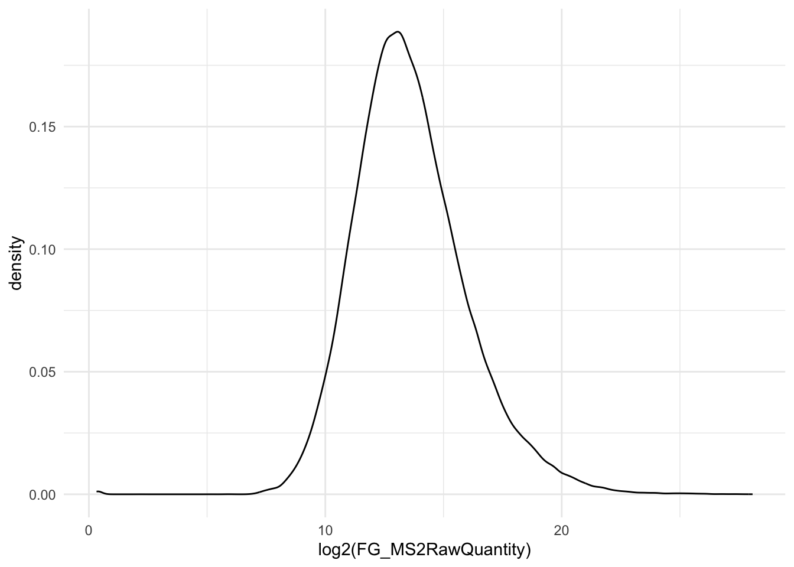
precursorsPTM |>
ggplot(aes(x = log2(FG_MS2RawQuantity))) +
geom_density() +
theme_minimal()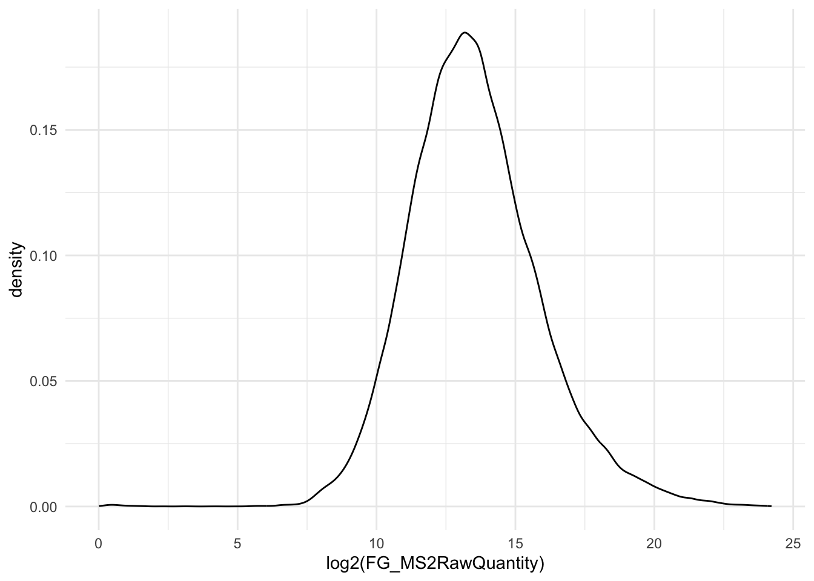
Seems no imputation has been done.
3.4 Sample annotation table
The sample annotation table) is not available and can be generated from the run labels, as the researchers included information on the design in the filenames.
annot <- precursors |>
dplyr::distinct(R_FileName) |>
separate(R_FileName, into = c('f1','tissue','f2','diet','rep'), sep = '_', remove=FALSE) |>
mutate(runCol=R_FileName,
sex = stringr::str_sub(diet,1,1),
diet = stringr::str_sub(diet,2),
rep = paste(diet, sex, rep, sep='_'),
sampleGroup = paste(tissue,diet,sex,sep='_'),
sampleId = paste(tissue,rep, sep="_")) |>
dplyr::select(-c(R_FileName,f1,f2)) |>
relocate("runCol")
annot runCol tissue diet rep sex sampleGroup sampleId
1 153_SC_FP_mhigh_2 SC high high_m_2 m SC_high_m SC_high_m_2
2 153_SC_FP_mhigh_3 SC high high_m_3 m SC_high_m SC_high_m_3
3 153_SC_FP_mlow_1 SC low low_m_1 m SC_low_m SC_low_m_1
4 153_SC_FP_mlow_2 SC low low_m_2 m SC_low_m SC_low_m_2
5 153_SC_FP_mlow_3 SC low low_m_3 m SC_low_m SC_low_m_3annotPTM <- precursorsPTM |>
dplyr::distinct(R_FileName) |>
separate(R_FileName, into = c('f1','tissue','f2','diet','rep'), sep = '_', remove=FALSE) |>
mutate(runCol=R_FileName,
sex = stringr::str_sub(diet,1,1),
diet = stringr::str_sub(diet,2),
rep = paste(diet, sex, rep, sep='_'),
sampleGroup = paste(tissue,diet,sex,sep='_'),
sampleId = paste(tissue,rep, sep="_")) |>
dplyr::select(-c(R_FileName,f1,f2)) |>
relocate("runCol")
annotPTM runCol tissue diet rep sex sampleGroup sampleId
1 153_SC_PP_mhigh_2 SC high high_m_2 m SC_high_m SC_high_m_2
2 153_SC_PP_mhigh_3 SC high high_m_3 m SC_high_m SC_high_m_3
3 153_SC_PP_mlow_1 SC low low_m_1 m SC_low_m SC_low_m_1
4 153_SC_PP_mlow_2 SC low low_m_2 m SC_low_m SC_low_m_2
5 153_SC_PP_mlow_3 SC low low_m_3 m SC_low_m SC_low_m_33.5 Convert to QFeatures
First, recall that the precursor table is file in long format. Every quantitative column in the precursor table contains information for multiple runs. Therefore, the function split the table based on the run identifier, given by the runCol argument (for Spectronaut, that identifier is contained in run). So, the QFeatures object after import will contain as many sets as there are runs. Next, the function links the annotation table with the PSM data. To achieve this, the annotation table must contain a runCol column that provides the run identifier in which each sample has been acquired, and this information will be used to match the identifiers in the Run column of the precursor table.
Here, we will use the FG_MS2Quantity column as quantification input.
We first combine the precursor and precursorPTM table in a list of QFeatures objects, which we subsequently reduce in one QFeatures object.
(qf <- list(
readQFeatures(assayData = precursors,
colData = annot,
quantCols = "FG_MS2RawQuantity",
runCol = "R_FileName",
fnames = "EG_PrecursorId"),
readQFeatures(assayData = precursorsPTM,
colData = annotPTM,
quantCols = "FG_MS2RawQuantity",
runCol = "R_FileName",
fnames = "EG_PrecursorId")
) |> reduce(c)
)An instance of class QFeatures (type: bulk) with 10 sets:
[1] 153_SC_FP_mhigh_2: SummarizedExperiment with 40510 rows and 1 columns
[2] 153_SC_FP_mhigh_3: SummarizedExperiment with 47124 rows and 1 columns
[3] 153_SC_FP_mlow_1: SummarizedExperiment with 46060 rows and 1 columns
...
[8] 153_SC_PP_mlow_1: SummarizedExperiment with 26266 rows and 1 columns
[9] 153_SC_PP_mlow_2: SummarizedExperiment with 27967 rows and 1 columns
[10] 153_SC_PP_mlow_3: SummarizedExperiment with 24889 rows and 1 columns 4 Data preprocessing
The data preprocessing workflow for DIA data is similar to the workflow for DDA-LFQ data, but there are suble differences as we start from precursor level data and have additional columns.
4.1 Encoding missing values
We first replace any zero in the quantitative data with an NA.
qf <- zeroIsNA(qf, names(qf))Note that msqrob2 can handle missing data without having to rely on hard-to-verify imputation assumptions, which is our general recommendation. However, msqrob2 does not prevent users from using imputation, which can be performed with impute() from the QFeatures package.
4.2 Precursor Filtering
Filtering removes low-quality and unreliable precursors that would otherwise introduce noise and artefacts in the data.
4.2.1 Remove questionable identifications
We apply standard filtering:
q-value threshold of 0.01 for the identification of precursors (
EG_Qvalue) and protein groups (PG_Qvalue).Remove precursors that could not be mapped, i.e. when
EG_PrecursorIdcolumn is an empty string.Filter decoys, i.e. only keep precursors for which the
EG_IsDecoycolumn equals 0.Keeping only proteotypic peptides, which map uniquely to a specific protein.
Only keep non-imputed intensities:
EG_IsImputedequals 0.
qf <- qf |>
filterFeatures(~ EG_Qvalue <= 0.01 & #1.
PG_Qvalue <= 0.01 & #1.
# Lib.Q.Value <= 0.01 & #1.
# Lib.PG_Q.Value <= 0.01 & #1.
EG_PrecursorId != "" & #2.
EG_IsDecoy == 0 & #3.
PEP_IsProteotypic == 1 & #4
EG_IsImputed == 0) #5 Note, that it is important that the filtering criteria are not distorting the distribution of the test statistics in the downstream analysis for features that are non-DA. It can be shown that filtering will not induce bias results when the filtering criterion is independent of test statistic. The criteria that we proposed above are all based on the results of the identification step, hence, they are independent of the downstream test statistics that will be used to prioritize DA proteins.
4.2.2 Assay joining
Up to now, the data from different runs were kept in separate assays. We can now join the normalised sets into an precursor set using joinAssays(). Sets are joined by stacking the columns (samples) in a matrix and rows (features) are matched according to a row identifier, here the EG_PrecursorId. We will store the result in the assay with name: precursor.
qf <- joinAssays(
x = qf,
i = grep("FP",names(qf), value = TRUE),
fcol = "EG_PrecursorId",
name = "precursors"
)
(qf <- joinAssays(
x = qf,
i = grep("PP",names(qf), value = TRUE),
fcol = "EG_PrecursorId",
name = "precursorsPTM"
)
)An instance of class QFeatures (type: bulk) with 12 sets:
[1] 153_SC_FP_mhigh_2: SummarizedExperiment with 37575 rows and 1 columns
[2] 153_SC_FP_mhigh_3: SummarizedExperiment with 43808 rows and 1 columns
[3] 153_SC_FP_mlow_1: SummarizedExperiment with 42829 rows and 1 columns
...
[10] 153_SC_PP_mlow_3: SummarizedExperiment with 24304 rows and 1 columns
[11] precursors: SummarizedExperiment with 54618 rows and 5 columns
[12] precursorsPTM: SummarizedExperiment with 30275 rows and 5 columns 4.2.3 Filtering: Remove highly missing precursors
We keep peptides that were observed at last 3 times out of the \(n = 5\) samples, so that we can estimate the peptide characteristics.
nObs <- 3
n <- ncol(qf[["precursors"]])
(qf <- filterNA(qf, i = c("precursors", "precursorsPTM"), pNA = (n - nObs) / n))An instance of class QFeatures (type: bulk) with 12 sets:
[1] 153_SC_FP_mhigh_2: SummarizedExperiment with 37575 rows and 1 columns
[2] 153_SC_FP_mhigh_3: SummarizedExperiment with 43808 rows and 1 columns
[3] 153_SC_FP_mlow_1: SummarizedExperiment with 42829 rows and 1 columns
...
[10] 153_SC_PP_mlow_3: SummarizedExperiment with 24304 rows and 1 columns
[11] precursors: SummarizedExperiment with 42643 rows and 5 columns
[12] precursorsPTM: SummarizedExperiment with 26444 rows and 5 columns 4.2.4 Filter one-hit wonders
Here, we remove proteins that can only be found by one peptide, as such proteins may not be trustworthy.
We first calculate how many distinct peptides map to each protein group (
PG_ProteinGroups). We use the stripped precursor sequence, i.e. sequence of the base peptide for this purpose.We store this information in the row data of the precursors assay
We filter precursors of one-hit wonder proteins.
We only do this for the proteins assay
# Filter for peptides per protein
pepsPerProtDf <- qf[["precursors"]] |>
rowData() |>
data.frame() |>
dplyr::select("PEP_StrippedSequence", "PG_ProteinGroups") |>
group_by(PG_ProteinGroups) |>
mutate(pepsPerProt = PEP_StrippedSequence |>
unique() |> length()
) #1.
rowData(qf[["precursors"]])$pepsPerProt <- pepsPerProtDf$pepsPerProt #2.
qf <- filterFeatures(qf,
~ pepsPerProt > 1,
keep = TRUE) #3.4.3 Log-transformation
We perform log2-transformation with logTransform() from the QFeatures package. We use base = 2 and store the result in a new summarized experiment named precursors_log
qf <- logTransform(qf,
base = 2,
i = "precursors",
name = "precursors_log")
qf <- logTransform(qf,
base = 2,
i = "precursorsPTM",
name = "precursorsPTM_log")4.4 Normalisation
qf[, , "precursors_log"] |> #1.
longForm(colvars = colnames(colData(qf))) |> #2.
data.frame() |>
filter(!is.na(value)) |>
ggplot() + #3.
aes(x = value,
colour = sampleGroup,
group = colname) +
geom_density() +
labs(subtitle = "precursors") +
theme_minimal()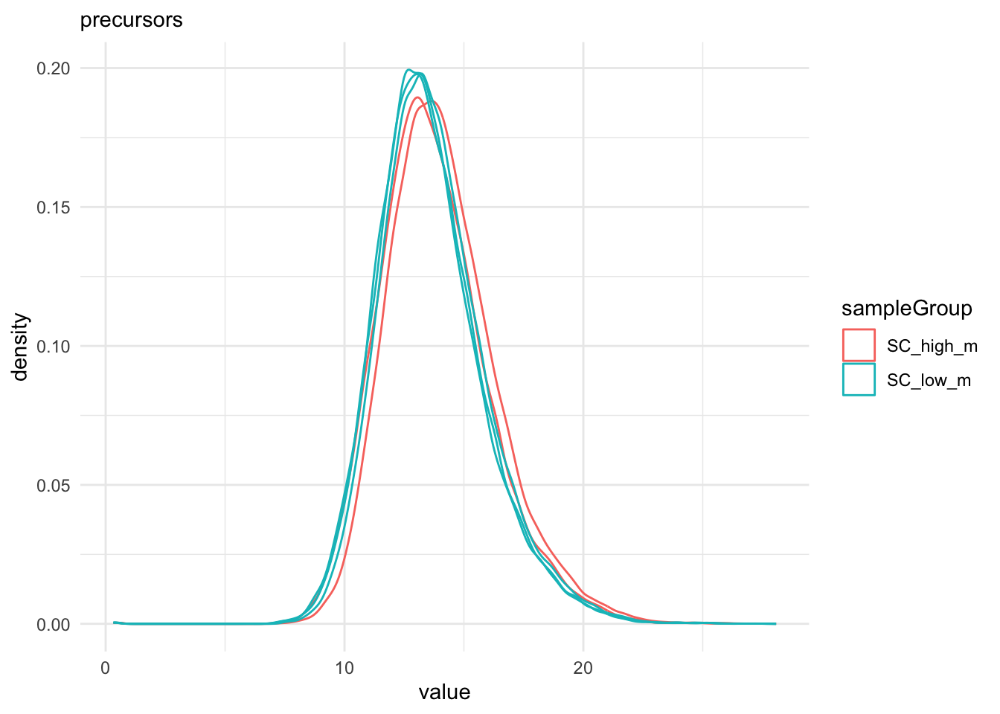
qf[, , "precursorsPTM_log"] |> #1.
longForm(colvars = colnames(colData(qf))) |> #2.
data.frame() |>
filter(!is.na(value)) |>
ggplot() + #3.
aes(x = value,
colour = sampleGroup,
group = colname) +
geom_density() +
labs(subtitle = "PTM - precursors") +
theme_minimal()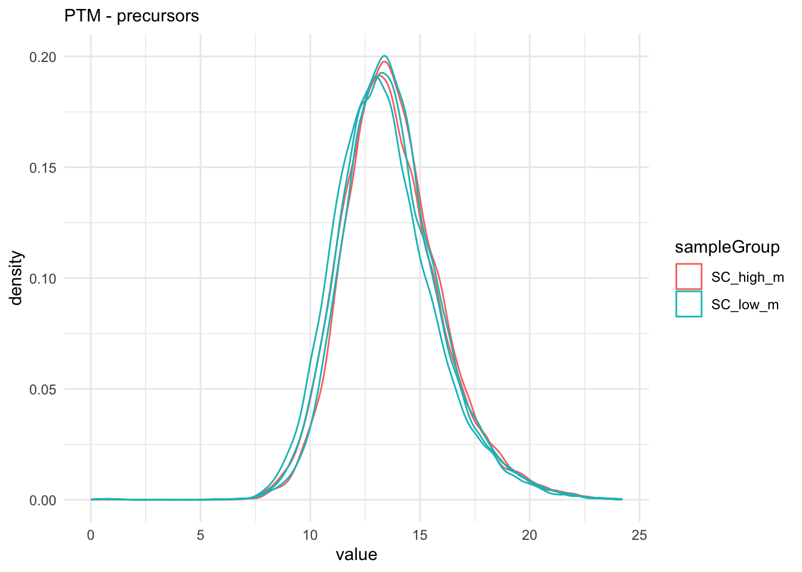
Normalisation is required. For this dataset we use median of ratio normalisation because we noticed severe differences in compositionality see Wrap-up normalisation.
qf <- sweep( #4. Subtract log2 norm factor column-by-column (MARGIN = 2)
qf,
MARGIN = 2,
STATS = nf_log_medrat(qf,"precursors_log"),
i = "precursors_log",
name = "precursors_norm"
)
qf <- sweep( #4. Subtract log2 norm factor column-by-column (MARGIN = 2)
qf,
MARGIN = 2,
STATS = nf_log_medrat(qf,"precursorsPTM_log"),
i = "precursorsPTM_log",
name = "precursorsPTM_norm"
)We explore the effect of the global normalisation in the subsequent plot.
Formally, the function applies the following operation on each sample \(i\) across all precursors \(p\):
\[ y_{ip}^{\text{norm}} = y_{ip} - \log_2(nf_i) \]
with \(y_ip\) the log2-transformed intensities and \(nf_i\) the log2-transformed norm factor. Upon normalisation, we can see that the distribution of the \(y_{ip}^{\text{norm}}\) nicely overlap (using the same code as above)
qf[, , "precursors_norm"] |>
longForm(colvars = colnames(colData(qf))) |>
data.frame() |>
filter(!is.na(value)) |>
ggplot() +
aes(x = value,
colour = sampleGroup,
group = colname) +
geom_density() +
labs(subtitle = "Median normalisation precursors") +
theme_minimal()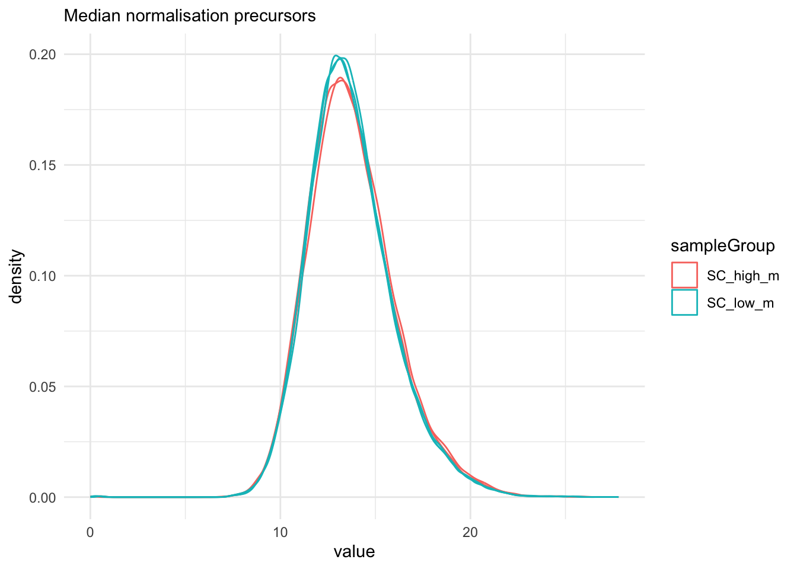
qf[, , "precursorsPTM_norm"] |>
longForm(colvars = colnames(colData(qf))) |>
data.frame() |>
filter(!is.na(value)) |>
ggplot() +
aes(x = value,
colour = sampleGroup,
group = colname) +
geom_density() +
labs(subtitle = "Median normalisation PTM precursors") +
theme_minimal()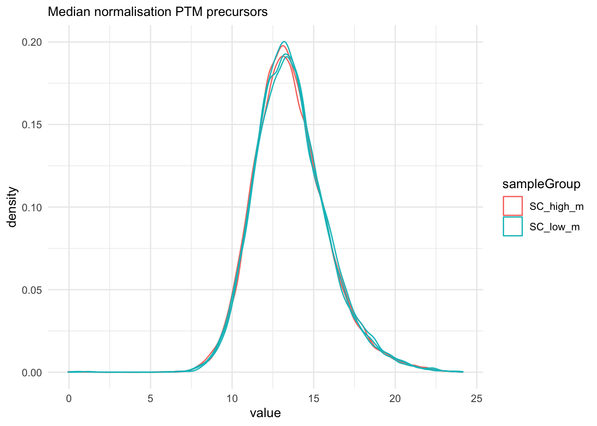
We also explore the normalisation for the common precursors.
precursorsCommon <- assay(qf[, , "precursors_log"]) |> na.exclude() |> rownames()
precursorCommonDens <- qf[precursorsCommon, , "precursors_norm"] |>
longForm(colvars = colnames(colData(qf))) |>
data.frame() |>
filter(!is.na(value)) |>
ggplot() +
aes(x = value,
colour = sampleGroup,
group = colname) +
geom_density() +
theme_minimal() +
labs(subtitle = "Median normalised log2 precursor intensities (common)")
precursorCommonDens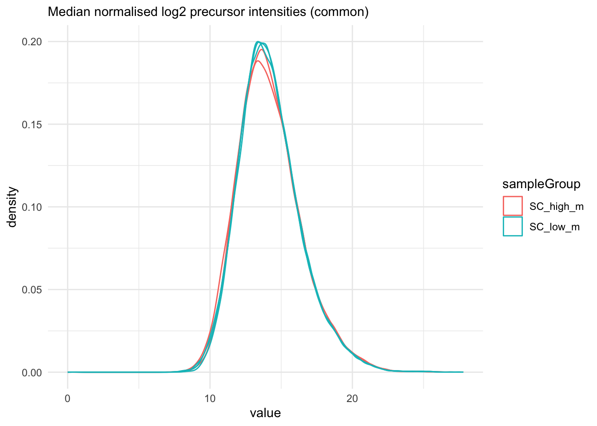
precursorsCommonPTM <- assay(qf[, , "precursorsPTM_log"]) |> na.exclude() |> rownames()
precursorCommonDensPTM <- qf[precursorsCommonPTM, , "precursorsPTM_norm"] |>
longForm(colvars = colnames(colData(qf))) |>
data.frame() |>
filter(!is.na(value)) |>
ggplot() +
aes(x = value,
colour = sampleGroup,
group = colname) +
geom_density() +
theme_minimal() +
labs(subtitle = "Median normalised log2 precursor intensities (common)")
precursorCommonDensPTM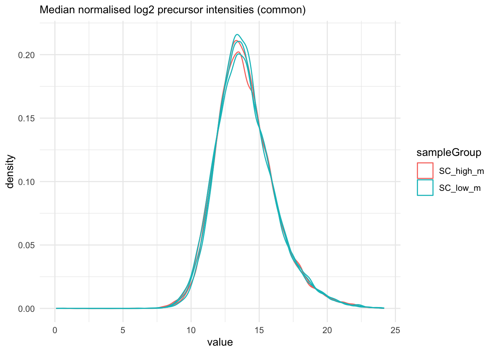
4.5 Summarisation
Here, we summarise the precursor-level data into protein intensities using maxLFQ. maxLFQ first calculates all pairwise log ratio’s between samples only using their shared precursors. Particularly, it uses the median of the log ratio’s between the shared precursors s, i.e. \[r_{ij} = median(y_{sj}-y_{si})\].
Hence, it first eliminates peptide effects. It then estimates the summaries by solving
\[
\sum_i\sum_j(y^{prot}_j - y^{prot}_i - r_ij)^2
\] It is implemented in the maxLFQ function of the iq package.
aggregateFeatures() streamlines summarisation. It requires the name of a rowData column to group the precursors into proteins (or protein groups), here PG_ProteinGroups. We provide the summarisation approach through the fun argument. Other summarisation methods are available from the MsCoreUtils package, see ?aggregateFeatures for a comprehensive list. The function will return a QFeatures object with a new set that we called proteins.
(qf <- aggregateFeatures(
qf, i = "precursors_norm",
name = "proteins",
fcol = "PG_ProteinGroups",
fun = function(X) iq::maxLFQ(X)$estimate
))An instance of class QFeatures (type: bulk) with 17 sets:
[1] 153_SC_FP_mhigh_2: SummarizedExperiment with 37575 rows and 1 columns
[2] 153_SC_FP_mhigh_3: SummarizedExperiment with 43808 rows and 1 columns
[3] 153_SC_FP_mlow_1: SummarizedExperiment with 42829 rows and 1 columns
...
[15] precursors_norm: SummarizedExperiment with 41723 rows and 5 columns
[16] precursorsPTM_norm: SummarizedExperiment with 26444 rows and 5 columns
[17] proteins: SummarizedExperiment with 3361 rows and 5 columns 5 Data exploration and QC regular assay
Data exploration aims to highlight the main sources of variation in the data prior to data modelling and can pinpoint to outlying or off-behaving samples.
5.1 Marginal distribution at precursor and protein level
precursorDens <- qf[, , "precursors_norm"] |>
longForm(colvars = colnames(colData(qf))) |>
data.frame() |>
filter(!is.na(value)) |>
ggplot() +
aes(x = value,
colour = sampleGroup,
group = colname) +
geom_density() +
theme_minimal() +
labs(subtitle = "Median normalised log2 precursor intensities")
precursorDens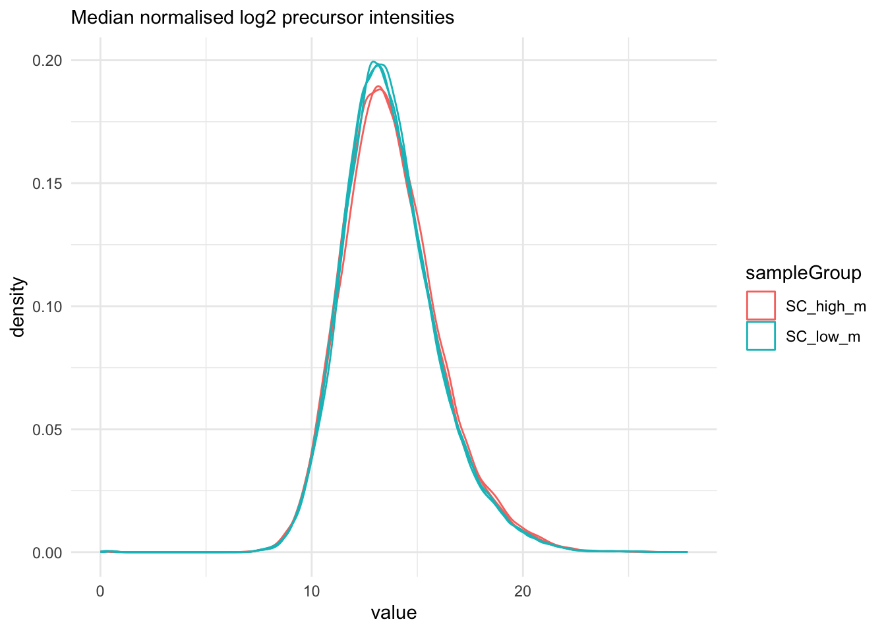
qf[, , "precursors_norm"] |>
longForm(colvars = colnames(colData(qf))) |>
data.frame() |>
filter(!is.na(value)) |>
ggplot() +
aes(x = sampleId,
y = value,
colour = sampleGroup,
group = colname) +
xlab("sample") +
geom_boxplot() +
theme_minimal() +
labs(subtitle = "Median normalised log2 precursor intensities")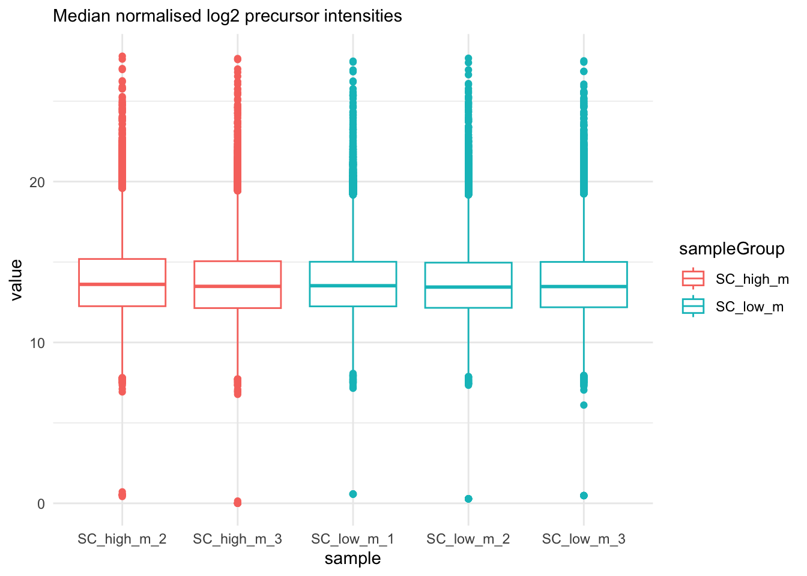
qf[, , "proteins"] |>
longForm(colvars = colnames(colData(qf))) |>
data.frame() |>
filter(!is.na(value)) |>
ggplot() +
aes(x = sampleId,
y = value,
colour = sampleGroup,
group = colname) +
xlab("sample") +
geom_boxplot() +
theme_minimal() +
labs(subtitle = "log2 protein intensities (median normalised precursors)")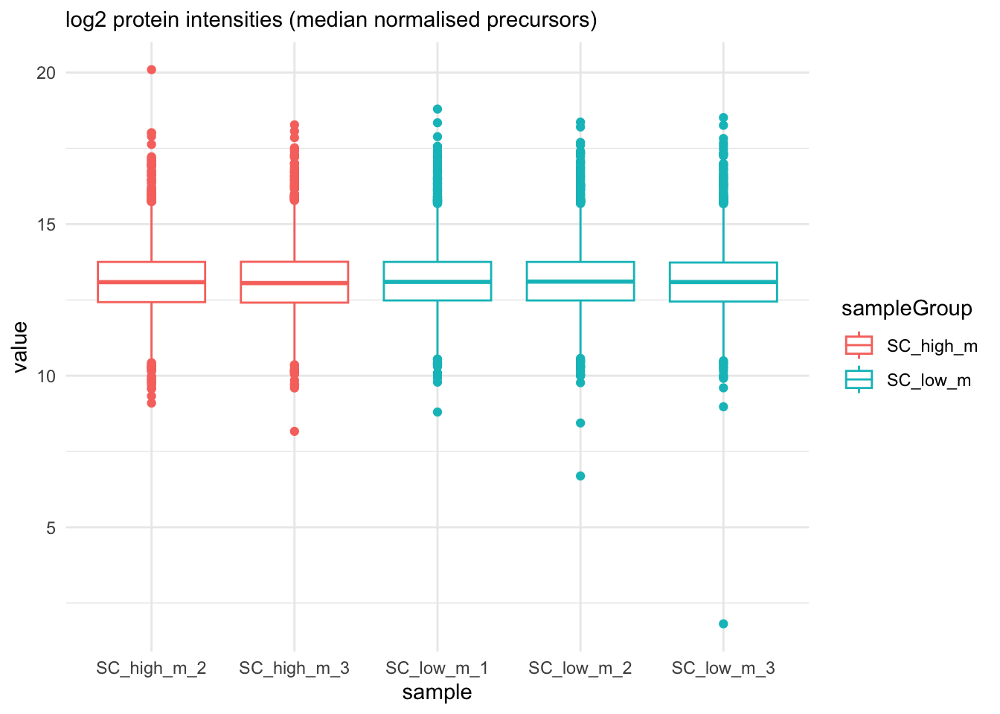
protDens <- qf[, , "proteins"] |>
longForm(colvars = colnames(colData(qf))) |>
data.frame() |>
filter(!is.na(value)) |>
ggplot() +
aes(x = value,
colour = sampleGroup,
group = colname) +
geom_density() +
theme_minimal() +
labs(subtitle = "log2 protein intensities (median normalised precursors)")
protDens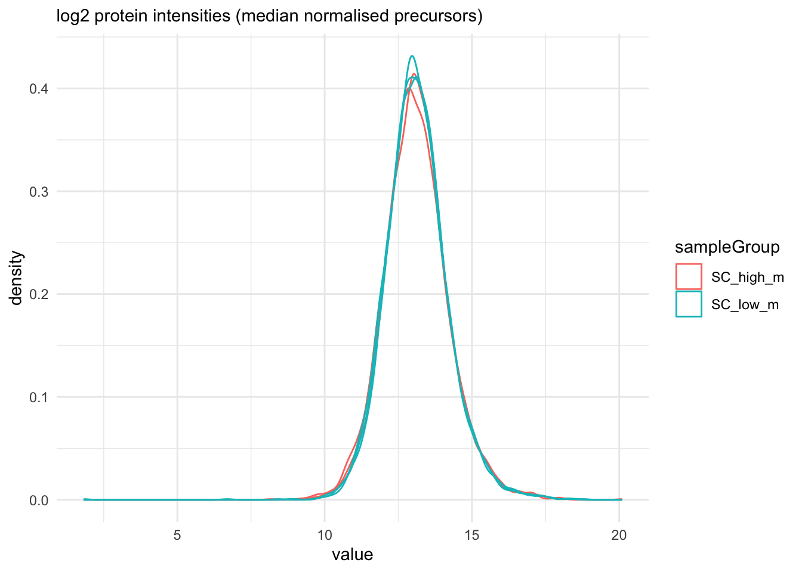
5.2 Charge state
qf[, , "precursors_norm"] |>
longForm(colvars = colnames(colData(qf)), rowvars = "FG_Charge") |>
as.data.frame() |>
filter(!is.na(value)) |>
filter(FG_Charge<=4) |>
ggplot(aes(x = sampleId)) +
geom_bar(aes(fill = factor(FG_Charge, levels = 4:1)),
colour = "black") +
labs(title = "Peptide types per sample",
x = "Sample",
fill = "Charge state") +
theme_bw()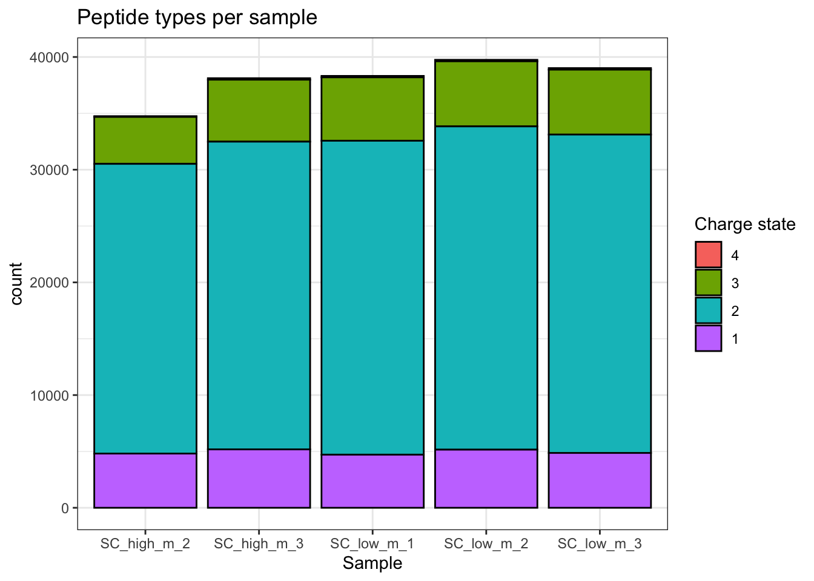
5.3 Identifications per sample
qf[,,"precursors_norm"] |>
longForm(colvars = colnames(colData(qf)),
rowvars= c("EG_PrecursorId",
"PG_ProteinGroups")) |>
data.frame() |>
filter(!is.na(value)) |>
group_by(sampleGroup, sampleId) |>
summarise(Precursors = length(unique(EG_PrecursorId)),
`Protein Groups` = length(unique(PG_ProteinGroups))) |>
pivot_longer(-(1:2),
names_to = "Feature",
values_to = "IDs") |>
ggplot(aes(x = sampleId, y = IDs, fill = sampleGroup)) +
geom_col() +
#scale_fill_observable() +
facet_wrap(~Feature,
scales = "free_y") +
labs(title = "Precursor and protein group identificiations per sample",
x = "Sample",
y = "Identifications") +
theme_bw() +
theme(axis.text.x = element_text(angle = 90))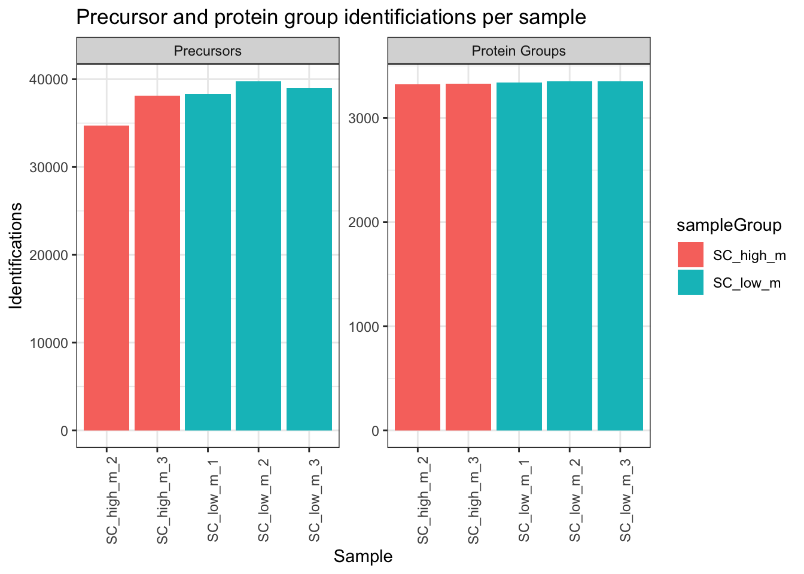
# Data Modeling (Robust Regression){#sec-modelling}5.4 Dimensionality reduction plot
A common approach for data exploration is to perform dimension reduction, such as Multi Dimensional Scaling (MDS). We will first extract the set to explore along the sample annotations (used for plot colouring).
protMDS <- getWithColData(qf, "proteins") |>
as("SingleCellExperiment") |>
runMDS(exprs_values = 1) |>
plotMDS(colour_by = "sampleGroup") +
labs(title = "Median normalisation")
protMDS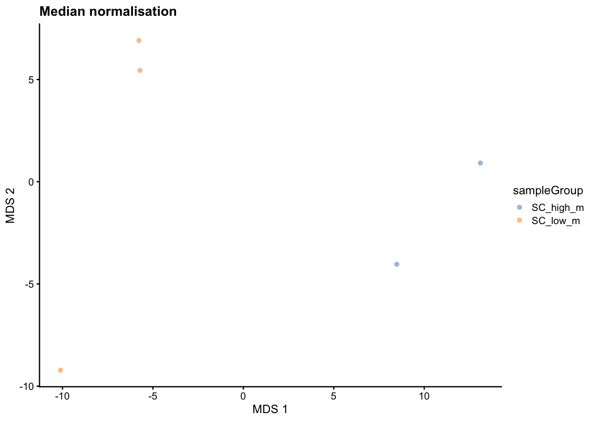
6 Data exploration and QC PTM assay
Data exploration aims to highlight the main sources of variation in the data prior to data modelling and can pinpoint to outlying or off-behaving samples.
6.1 Marginal distribution at precursor and protein level
precursorDensPTM <- qf[, , "precursorsPTM_norm"] |>
longForm(colvars = colnames(colData(qf))) |>
data.frame() |>
filter(!is.na(value)) |>
ggplot() +
aes(x = value,
colour = sampleGroup,
group = colname) +
geom_density() +
theme_minimal() +
labs(subtitle = "Median normalised log2 PTM precursor intensities")
precursorDensPTM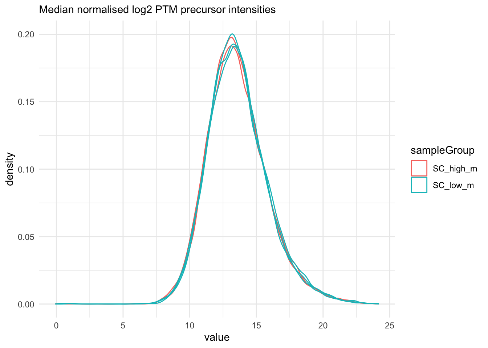
qf[, , "precursorsPTM_norm"] |>
longForm(colvars = colnames(colData(qf))) |>
data.frame() |>
filter(!is.na(value)) |>
ggplot() +
aes(x = sampleId,
y = value,
colour = sampleGroup,
group = colname) +
xlab("sample") +
geom_boxplot() +
theme_minimal() +
labs(subtitle = "Median normalised log2 PTM precursor intensities")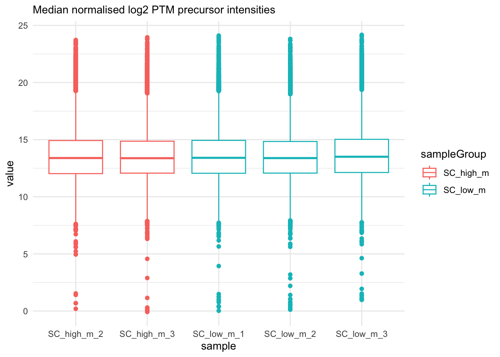
6.2 Charge state
qf[, , "precursorsPTM_norm"] |>
longForm(colvars = colnames(colData(qf)), rowvars = "FG_Charge") |>
as.data.frame() |>
filter(!is.na(value)) |>
filter(FG_Charge<=4) |>
ggplot(aes(x = sampleId)) +
geom_bar(aes(fill = factor(FG_Charge, levels = 4:1)),
colour = "black") +
labs(title = "Peptide types per sample",
x = "Sample",
fill = "Charge state") +
theme_bw()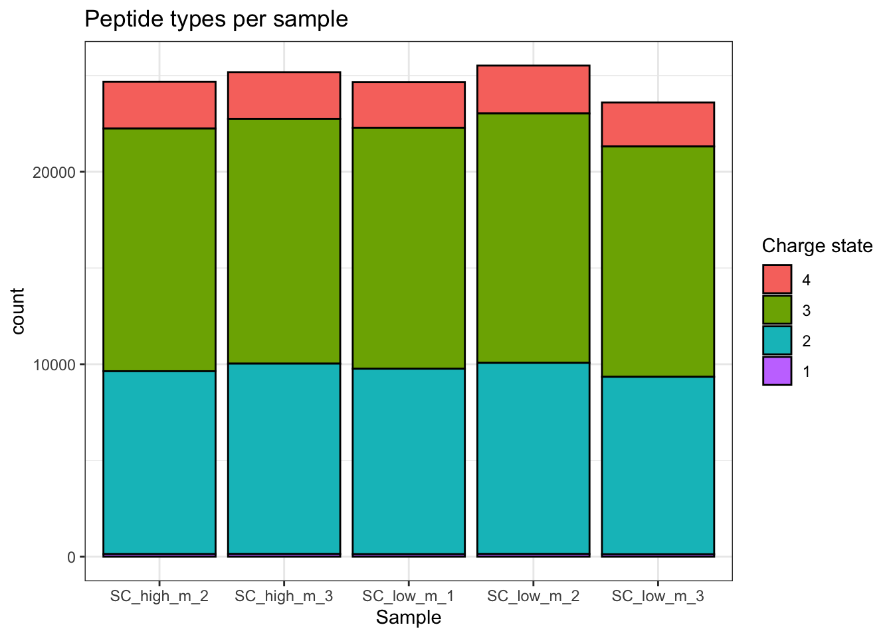
6.3 Identifications per sample
qf[,,"precursorsPTM_norm"] |>
longForm(colvars = colnames(colData(qf)),
rowvars= c("EG_PrecursorId",
"PG_ProteinGroups")) |>
data.frame() |>
filter(!is.na(value)) |>
group_by(sampleGroup, sampleId) |>
summarise(Precursors = length(unique(EG_PrecursorId)),
`Protein Groups` = length(unique(PG_ProteinGroups))) |>
pivot_longer(-(1:2),
names_to = "Feature",
values_to = "IDs") |>
ggplot(aes(x = sampleId, y = IDs, fill = sampleGroup)) +
geom_col() +
#scale_fill_observable() +
facet_wrap(~Feature,
scales = "free_y") +
labs(title = "Precursor and protein group identificiations per PTM sample",
x = "Sample",
y = "Identifications") +
theme_bw() +
theme(axis.text.x = element_text(angle = 90))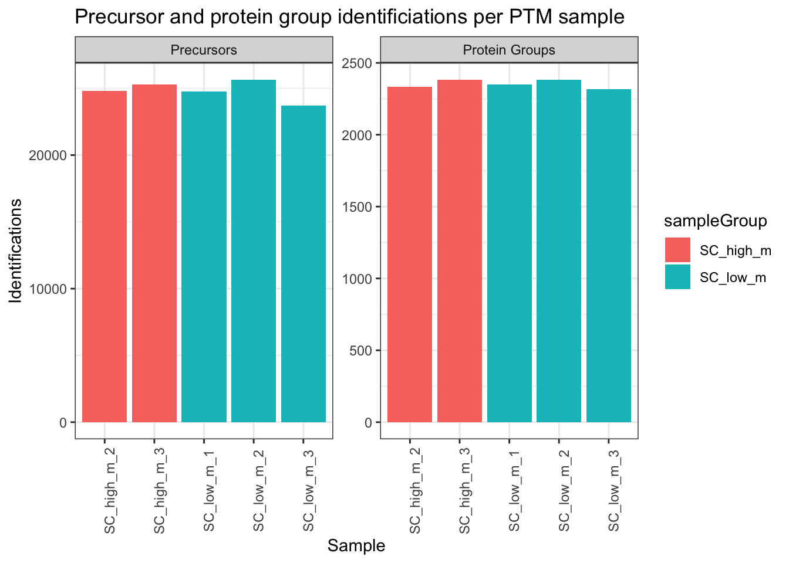
# Data Modeling (Robust Regression){#sec-modelling}6.4 Dimensionality reduction plot
A common approach for data exploration is to perform dimension reduction, such as Multi Dimensional Scaling (MDS). We will first extract the set to explore along the sample annotations (used for plot colouring).
precursorPTMMDS <- getWithColData(qf, "precursorsPTM_norm") |>
as("SingleCellExperiment") |>
runMDS(exprs_values = 1) |>
plotMDS(colour_by = "sampleGroup") +
labs(title = "Median normalisation")
precursorPTMMDS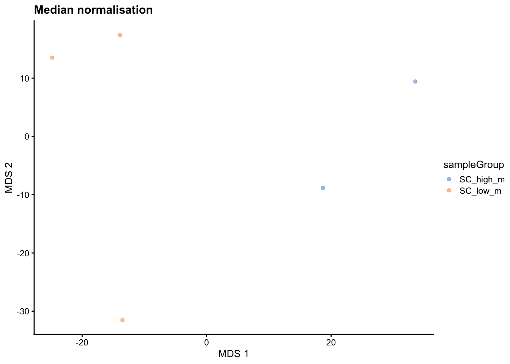
7 Data Modeling at protein-level (Robust Regression)
7.1 Model estimation
We first define the model. We only have one sources of variability in the experiment that we can model, i.e. the effect of the spike-in condition.
We fit the model to each protein in the
proteinssummarised experiment of the QFeatures objectqfusing the msqrob function.
model <- ~ diet
qf <- msqrob(
qf,
i = "proteins",
formula = model,
robust = TRUE)We enabled M-estimation (robust = TRUE) for improved robustness against outliers.
7.2 Inference
We can now convert the research question “do the spike-in conditions affect the protein intensities?” into a statistical hypothesis.
In other words, we need to translate this question in a null and alternative hypothesis on a single model parameter or a linear combination of model parameters, which is also referred to with a contrast.
To aid defining contrasts, we will visualise the experimental design using the ExploreModelMatrix package.
vd <- ExploreModelMatrix::VisualizeDesign(
sampleData = colData(qf),
designFormula = model,
textSizeFitted = 4
)
vd$plotlist[[1]]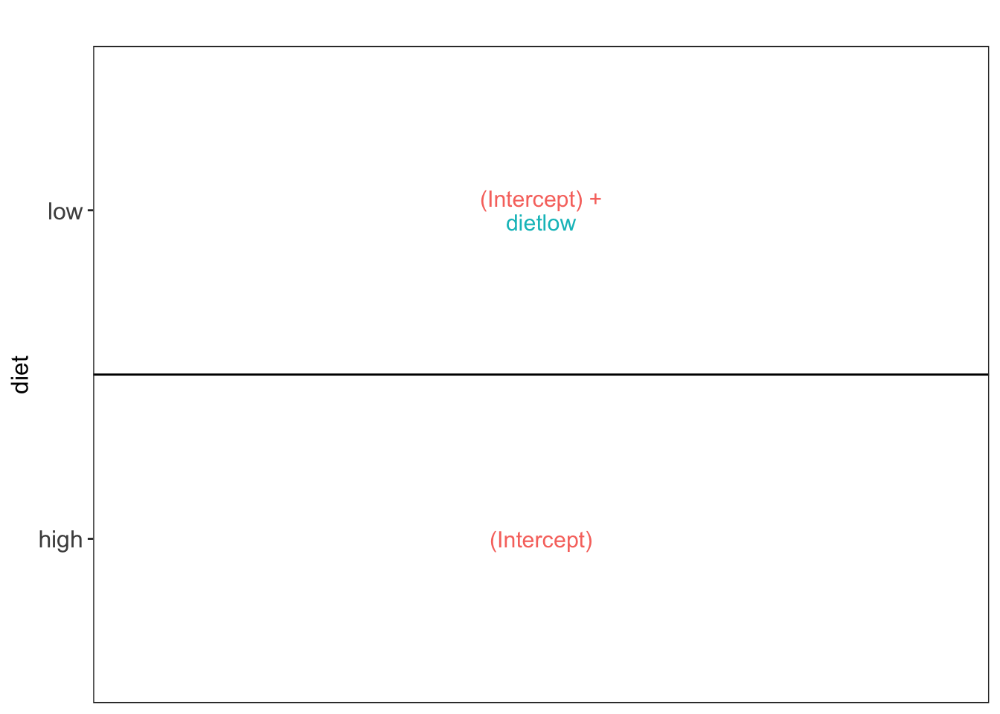
We have 4 interesting research questions related to the diet.
- Is there an effect of diet on in female mice / prioritise proteins that are differentially abundant (DA) between low and high diet for female mice.
- Is there an effect of diet in male mice / prioritise proteins that are DA between low and high diet for male mice
- Is the effect of diet different in male and female mice / prioritise proteins for which the log2 FC between low and high diet differs between male and female mice (interaction)
- Prioritise proteins that are differentially abundant (DA) between low and high diet in mice. Here we will average the log2 FC over male and female mice. This would prioritise proteins that would be picked up according to diet if we were to remove the interaction term from the model.
Each of these contrasts can be translated in a log2 FC or a difference in log2 FC and can be estimated with one or a linear combination of the model parameters.
- \(\log_2 FC_\text{low - high}^\text{f} = (Intercept) + dietlow- (Intercept) = dietlow\)
- \(\log_2 FC_\text{low - high}^\text{m} = (Intercept) + dietlow + sexm + dietlow:sexm - ((Intercept) + sexm) = dietlow + dietlow:sexm\)
- \(\log_2 FC_\text{low - high}^\text{m} - \log_2 FC_\text{low - high}^\text{f} = dietlow:sexm\)
- $0.5 2 FC^ + 0.5 2 FC^ = dietlow + 0.5 dietlow:sexm $
Below we define the contrast and construct the corresponding contrast matrix.
contrast <- "dietlow=0"
(L <- makeContrast(
contrast,
parameterNames = colnames(vd$designmatrix)
)) dietlow
(Intercept) 0
dietlow 1We assess the contrast for each protein.
qf <- hypothesisTest(qf, i = "proteins", contrast = L, overwrite = TRUE)We extract the results table from the proteins summarised experiment in the qf object.
inferences <-
msqrobCollect(qf[["proteins"]], L)7.3 Report results
We report the results using a results table, volcano plots and heatmaps.
7.3.1 Results table
We use the 5% nominal FDR level to report results
alpha <- 0.05for (j in colnames(L)) {
inference <- inferences |>
dplyr::filter(adjPval < alpha & contrast == j)
cat("**Median - Contrast:**", j, "= 0 (", nrow(inference),
"significant proteins)\n\n")
cat('<div style="max-height:300px; overflow-y:auto;">')
print(
kable(
inference |>
dplyr::arrange(pval) |>
dplyr::relocate(feature),
row.names = FALSE
)
)
cat('</div>')
cat("\n\n\n---\n\n")
}Median - Contrast: dietlow = 0 ( 185 significant proteins)
| feature | logFC | se | df | t | pval | adjPval | contrast |
|---|---|---|---|---|---|---|---|
| Q6P8J7 | -3.7862842 | 0.1655522 | 5.387791 | -22.870642 | 0.0000014 | 0.0023243 | dietlow |
| P43276 | 1.7518145 | 0.0961578 | 5.907339 | 18.218118 | 0.0000020 | 0.0023243 | dietlow |
| P43275 | 2.3686773 | 0.1254388 | 5.663895 | 18.883124 | 0.0000025 | 0.0023243 | dietlow |
| P04247 | -2.1910478 | 0.1297443 | 5.907339 | -16.887431 | 0.0000032 | 0.0023243 | dietlow |
| Q8K1J6 | 1.5471598 | 0.0943304 | 5.726523 | 16.401492 | 0.0000049 | 0.0028562 | dietlow |
| Q9JI91 | -2.2730379 | 0.1415319 | 5.693246 | -16.060254 | 0.0000059 | 0.0028562 | dietlow |
| P05784 | -1.6424766 | 0.1174299 | 5.907339 | -13.986875 | 0.0000094 | 0.0037738 | dietlow |
| P11404 | -1.3011875 | 0.0938036 | 5.877111 | -13.871408 | 0.0000103 | 0.0037738 | dietlow |
| P05201 | -1.2226138 | 0.0948301 | 5.907339 | -12.892677 | 0.0000151 | 0.0039926 | dietlow |
| O89053 | 1.2409367 | 0.0969253 | 5.907339 | 12.803028 | 0.0000157 | 0.0039926 | dietlow |
| P13412 | -1.3101148 | 0.0947054 | 5.558055 | -13.833578 | 0.0000162 | 0.0039926 | dietlow |
| P29351 | 1.2186226 | 0.0919177 | 5.722562 | 13.257762 | 0.0000164 | 0.0039926 | dietlow |
| P06800 | 1.4076210 | 0.1140854 | 5.907339 | 12.338311 | 0.0000194 | 0.0040032 | dietlow |
| D0QMC3 | 1.1798142 | 0.0961930 | 5.907339 | 12.265073 | 0.0000200 | 0.0040032 | dietlow |
| P25688 | -1.1993010 | 0.0988491 | 5.907339 | -12.132648 | 0.0000213 | 0.0040032 | dietlow |
| P15864 | 1.9377583 | 0.1604228 | 5.907339 | 12.079069 | 0.0000219 | 0.0040032 | dietlow |
| Q61646 | -1.4917190 | 0.1249409 | 5.907339 | -11.939399 | 0.0000234 | 0.0040261 | dietlow |
| Q91Y97 | -1.1864871 | 0.0982630 | 5.727328 | -12.074606 | 0.0000273 | 0.0041618 | dietlow |
| Q9EQF5 | -1.2557960 | 0.1082030 | 5.907339 | -11.605925 | 0.0000275 | 0.0041618 | dietlow |
| Q61176 | -1.0029678 | 0.0869414 | 5.907339 | -11.536138 | 0.0000284 | 0.0041618 | dietlow |
| P49429 | -1.2565022 | 0.1060258 | 5.729867 | -11.850912 | 0.0000302 | 0.0042131 | dietlow |
| Q61233 | 0.9878297 | 0.0889923 | 5.907339 | 11.100167 | 0.0000354 | 0.0047088 | dietlow |
| P43277 | 1.6262652 | 0.1482135 | 5.907339 | 10.972449 | 0.0000378 | 0.0047501 | dietlow |
| Q64374 | -1.2027469 | 0.1018907 | 5.501523 | -11.804281 | 0.0000408 | 0.0047501 | dietlow |
| Q6DFW4 | 1.0293071 | 0.0949005 | 5.870501 | 10.846173 | 0.0000420 | 0.0047501 | dietlow |
| Q63880 | -1.2016570 | 0.1081345 | 5.748587 | -11.112618 | 0.0000422 | 0.0047501 | dietlow |
| Q8BK48 | -0.9800837 | 0.0931479 | 5.907339 | -10.521800 | 0.0000479 | 0.0051423 | dietlow |
| P19973 | 1.2032494 | 0.1148947 | 5.907339 | 10.472623 | 0.0000492 | 0.0051423 | dietlow |
| Q8R429 | -1.2201989 | 0.1185090 | 5.907339 | -10.296253 | 0.0000541 | 0.0054641 | dietlow |
| Q9JIF9 | -1.3132582 | 0.1060873 | 5.038739 | -12.379030 | 0.0000579 | 0.0056504 | dietlow |
| P16460 | -1.1601049 | 0.1177059 | 5.907339 | -9.855962 | 0.0000692 | 0.0065355 | dietlow |
| Q9CSU0 | 1.0855921 | 0.1054128 | 5.633829 | 10.298489 | 0.0000727 | 0.0066509 | dietlow |
| Q91X83 | -1.2176438 | 0.1267044 | 5.907339 | -9.610115 | 0.0000797 | 0.0068321 | dietlow |
| Q3TYS2 | 0.9434848 | 0.0937159 | 5.628091 | 10.067497 | 0.0000826 | 0.0068321 | dietlow |
| Q9JK37 | -1.1711916 | 0.1228773 | 5.907339 | -9.531394 | 0.0000835 | 0.0068321 | dietlow |
| Q8C196 | -0.9773304 | 0.0968707 | 5.602225 | -10.089017 | 0.0000840 | 0.0068321 | dietlow |
| Q8VCR8 | -0.9644193 | 0.1019023 | 5.907339 | -9.464158 | 0.0000868 | 0.0068720 | dietlow |
| P28352 | 1.0261772 | 0.1023294 | 5.500893 | 10.028175 | 0.0000968 | 0.0074578 | dietlow |
| O70250 | -0.9973442 | 0.1075094 | 5.878858 | -9.276811 | 0.0000998 | 0.0074953 | dietlow |
| Q9DBT9 | -0.8954375 | 0.0983963 | 5.907339 | -9.100314 | 0.0001081 | 0.0079095 | dietlow |
| P70694 | -0.8907476 | 0.0947761 | 5.670769 | -9.398442 | 0.0001144 | 0.0080630 | dietlow |
| Q9QXF8 | -1.1730211 | 0.1218223 | 5.534269 | -9.628950 | 0.0001157 | 0.0080630 | dietlow |
| Q8BH59 | -0.9852654 | 0.1097956 | 5.802493 | -8.973632 | 0.0001291 | 0.0087893 | dietlow |
| P06330 | 0.8932909 | 0.0990512 | 5.741701 | 9.018480 | 0.0001332 | 0.0088632 | dietlow |
| Q91WU0 | 0.9125984 | 0.1015615 | 5.653668 | 8.985672 | 0.0001479 | 0.0096161 | dietlow |
| P43274 | 1.1465445 | 0.1341117 | 5.907339 | 8.549174 | 0.0001528 | 0.0096161 | dietlow |
| P10922 | 0.8470580 | 0.0986362 | 5.865428 | 8.587703 | 0.0001548 | 0.0096161 | dietlow |
| Q9DCU9 | -0.8924891 | 0.1052638 | 5.907339 | -8.478593 | 0.0001599 | 0.0096161 | dietlow |
| Q8BK03 | 2.0371058 | 0.2405399 | 5.907339 | 8.468889 | 0.0001609 | 0.0096161 | dietlow |
| Q8VCH0 | -1.0205488 | 0.1213151 | 5.907339 | -8.412383 | 0.0001670 | 0.0097779 | dietlow |
| Q3TBT3 | 1.1681922 | 0.1364050 | 5.642448 | 8.564146 | 0.0001930 | 0.0110788 | dietlow |
| Q1XH17 | -0.8123640 | 0.0998702 | 5.907339 | -8.134200 | 0.0002009 | 0.0113105 | dietlow |
| O35490 | -0.8763484 | 0.1094037 | 5.907339 | -8.010229 | 0.0002185 | 0.0120710 | dietlow |
| O35660 | 1.1078467 | 0.1345585 | 5.684295 | 8.233199 | 0.0002289 | 0.0124096 | dietlow |
| Q9ES56 | 0.9178685 | 0.1166717 | 5.907339 | 7.867105 | 0.0002411 | 0.0127763 | dietlow |
| Q60953 | 0.9788494 | 0.1047562 | 4.969349 | 9.344069 | 0.0002444 | 0.0127763 | dietlow |
| Q5SX40 | -2.9021368 | 0.3708889 | 5.862846 | -7.824815 | 0.0002577 | 0.0132364 | dietlow |
| P62631 | -0.9391222 | 0.1193532 | 5.738527 | -7.868429 | 0.0002777 | 0.0140178 | dietlow |
| Q99LJ1 | 0.7174639 | 0.0904661 | 5.660655 | 7.930747 | 0.0002847 | 0.0141282 | dietlow |
| P01843 | 1.2312250 | 0.1630089 | 5.907339 | 7.553116 | 0.0003009 | 0.0144464 | dietlow |
| P05132 | 1.0013756 | 0.1316430 | 5.859641 | 7.606752 | 0.0003010 | 0.0144464 | dietlow |
| Q8BFP9 | -1.1874674 | 0.1407541 | 5.162274 | -8.436465 | 0.0003280 | 0.0154894 | dietlow |
| P16331 | -1.0115972 | 0.1195684 | 5.041281 | -8.460406 | 0.0003638 | 0.0167623 | dietlow |
| Q8BJS4 | 0.6672399 | 0.0918307 | 5.907339 | 7.265977 | 0.0003710 | 0.0167623 | dietlow |
| P05063 | -2.9062905 | 0.3387283 | 4.951402 | -8.580005 | 0.0003721 | 0.0167623 | dietlow |
| E9PZQ0 | -0.7302623 | 0.1008983 | 5.907339 | -7.237605 | 0.0003789 | 0.0168111 | dietlow |
| P10107 | -0.6668940 | 0.0909570 | 5.795421 | -7.331969 | 0.0003856 | 0.0168525 | dietlow |
| P28665 | 0.6245045 | 0.0872837 | 5.907339 | 7.154884 | 0.0004031 | 0.0171936 | dietlow |
| Q3V1D3 | -0.8693860 | 0.1216783 | 5.907339 | -7.144954 | 0.0004061 | 0.0171936 | dietlow |
| P47857 | -0.8722365 | 0.1226663 | 5.907339 | -7.110648 | 0.0004167 | 0.0171936 | dietlow |
| A2AUC9 | -0.7755703 | 0.1061938 | 5.722381 | -7.303350 | 0.0004169 | 0.0171936 | dietlow |
| Q61029 | 0.7734408 | 0.1094447 | 5.907339 | 7.066958 | 0.0004308 | 0.0175145 | dietlow |
| P09602 | 0.8041340 | 0.1134938 | 5.847555 | 7.085266 | 0.0004443 | 0.0175145 | dietlow |
| P61939 | -0.7129450 | 0.1015129 | 5.907339 | -7.023195 | 0.0004453 | 0.0175145 | dietlow |
| Q8VC12 | -0.9310911 | 0.1306929 | 5.796307 | -7.124268 | 0.0004486 | 0.0175145 | dietlow |
| Q78JT3 | -0.8619260 | 0.1234517 | 5.907339 | -6.981886 | 0.0004596 | 0.0177071 | dietlow |
| P01635 | 0.8467338 | 0.1211986 | 5.787738 | 6.986331 | 0.0005005 | 0.0190314 | dietlow |
| Q8R422 | 0.8299526 | 0.1197589 | 5.635584 | 6.930198 | 0.0005848 | 0.0214724 | dietlow |
| Q8K274 | 0.8308477 | 0.1245755 | 5.907339 | 6.669429 | 0.0005865 | 0.0214724 | dietlow |
| O09173 | -0.8327153 | 0.1231561 | 5.804973 | -6.761464 | 0.0005867 | 0.0214724 | dietlow |
| Q91ZJ5 | -0.7757025 | 0.1149809 | 5.800147 | -6.746361 | 0.0005956 | 0.0215312 | dietlow |
| P07310 | -0.6199573 | 0.0935240 | 5.869742 | -6.628855 | 0.0006218 | 0.0220014 | dietlow |
| P55050 | -1.2544550 | 0.1643503 | 4.961632 | -7.632815 | 0.0006354 | 0.0220014 | dietlow |
| Q99LB7 | -0.7821317 | 0.1022155 | 4.939012 | -7.651795 | 0.0006410 | 0.0220014 | dietlow |
| P30115 | -0.6774846 | 0.1034349 | 5.907339 | -6.549862 | 0.0006454 | 0.0220014 | dietlow |
| P15089 | 0.5906509 | 0.0901992 | 5.907339 | 6.548294 | 0.0006462 | 0.0220014 | dietlow |
| P62806 | 0.8156889 | 0.1211567 | 5.650282 | 6.732512 | 0.0006707 | 0.0225740 | dietlow |
| O08784 | 0.6592223 | 0.1011060 | 5.835693 | 6.520109 | 0.0006943 | 0.0231006 | dietlow |
| Q9Z2V4 | 0.5937963 | 0.0923784 | 5.907339 | 6.427870 | 0.0007126 | 0.0232995 | dietlow |
| Q9Z2D6 | 0.8247119 | 0.1263138 | 5.772835 | 6.529072 | 0.0007199 | 0.0232995 | dietlow |
| P61211 | 1.0767237 | 0.1680197 | 5.907339 | 6.408317 | 0.0007241 | 0.0232995 | dietlow |
| P30681 | 1.0031518 | 0.1410320 | 5.136060 | 7.112939 | 0.0007612 | 0.0242259 | dietlow |
| O54824 | 0.8501878 | 0.1342290 | 5.907339 | 6.333860 | 0.0007699 | 0.0242409 | dietlow |
| P50431 | -0.8434375 | 0.1182518 | 5.076807 | -7.132554 | 0.0007889 | 0.0242711 | dietlow |
| Q7TNV0 | 0.7093696 | 0.1126553 | 5.907339 | 6.296818 | 0.0007940 | 0.0242711 | dietlow |
| Q8VHX6 | -0.6119776 | 0.0972305 | 5.907339 | -6.294094 | 0.0007958 | 0.0242711 | dietlow |
| Q06185 | -0.6422671 | 0.1022483 | 5.894157 | -6.281447 | 0.0008111 | 0.0244847 | dietlow |
| Q9QZQ8 | 1.1765452 | 0.1638231 | 4.987421 | 7.181803 | 0.0008232 | 0.0245944 | dietlow |
| P31001 | -0.6248160 | 0.0999889 | 5.866558 | -6.248856 | 0.0008485 | 0.0250964 | dietlow |
| Q8BK30 | -0.8214773 | 0.1325114 | 5.907339 | -6.199297 | 0.0008615 | 0.0252236 | dietlow |
| O70152 | 0.5988145 | 0.0982723 | 5.907339 | 6.093421 | 0.0009423 | 0.0265139 | dietlow |
| P42225 | 0.5284013 | 0.0868263 | 5.907339 | 6.085730 | 0.0009485 | 0.0265139 | dietlow |
| Q91VK1 | 1.0062344 | 0.1488716 | 5.159470 | 6.759074 | 0.0009505 | 0.0265139 | dietlow |
| O35900 | 0.8743970 | 0.1438374 | 5.907339 | 6.079067 | 0.0009539 | 0.0265139 | dietlow |
| O54865 | 0.8323071 | 0.1370639 | 5.907339 | 6.072401 | 0.0009594 | 0.0265139 | dietlow |
| P49710 | 0.6507435 | 0.1071747 | 5.907339 | 6.071800 | 0.0009599 | 0.0265139 | dietlow |
| Q7TMB8 | 0.6711721 | 0.1110877 | 5.907339 | 6.041823 | 0.0009848 | 0.0266441 | dietlow |
| Q9ESX5 | 1.2299965 | 0.1909000 | 5.406746 | 6.443146 | 0.0009949 | 0.0266441 | dietlow |
| P43883 | -0.8435281 | 0.1399420 | 5.907339 | -6.027700 | 0.0009969 | 0.0266441 | dietlow |
| P11725 | -0.7953075 | 0.1307181 | 5.824063 | -6.084141 | 0.0010010 | 0.0266441 | dietlow |
| Q8CHR6 | -0.8895857 | 0.1468232 | 5.818179 | -6.058892 | 0.0010264 | 0.0268989 | dietlow |
| Q91YR9 | -0.8282945 | 0.1382574 | 5.907339 | -5.990960 | 0.0010289 | 0.0268989 | dietlow |
| Q9DBG1 | -0.8591474 | 0.1410034 | 5.744537 | -6.093098 | 0.0010451 | 0.0270806 | dietlow |
| P06801 | -0.5109072 | 0.0860588 | 5.907339 | -5.936719 | 0.0010785 | 0.0275927 | dietlow |
| Q9CQR4 | -0.5720925 | 0.0964563 | 5.907339 | -5.931105 | 0.0010837 | 0.0275927 | dietlow |
| P04441 | 0.7937721 | 0.1345999 | 5.907339 | 5.897271 | 0.0011162 | 0.0281742 | dietlow |
| Q99JY3 | 0.7092755 | 0.1102617 | 5.161968 | 6.432658 | 0.0011965 | 0.0299441 | dietlow |
| Q8VE37 | 0.6206425 | 0.1087059 | 5.907339 | 5.709374 | 0.0013181 | 0.0327056 | dietlow |
| Q9QXD6 | -0.6336293 | 0.1114856 | 5.907339 | -5.683509 | 0.0013490 | 0.0330752 | dietlow |
| P56135 | -0.8842728 | 0.1501548 | 5.595206 | -5.889076 | 0.0013618 | 0.0330752 | dietlow |
| Q8R5I6 | 0.5667325 | 0.0953814 | 5.509150 | 5.941753 | 0.0013768 | 0.0330752 | dietlow |
| Q9WUB3 | -0.5701701 | 0.0960622 | 5.515768 | -5.935424 | 0.0013781 | 0.0330752 | dietlow |
| Q9QYA2 | 0.5123853 | 0.0909168 | 5.907339 | 5.635758 | 0.0014083 | 0.0335190 | dietlow |
| Q9DBR0 | 0.8606467 | 0.1516632 | 5.829937 | 5.674725 | 0.0014219 | 0.0335190 | dietlow |
| Q7TSG2 | 0.7901060 | 0.1361287 | 5.630744 | 5.804110 | 0.0014310 | 0.0335190 | dietlow |
| O35286 | 0.5368064 | 0.0936861 | 5.710856 | 5.729838 | 0.0014530 | 0.0336757 | dietlow |
| Q8VCI0 | 1.4346354 | 0.2458707 | 5.548852 | 5.834919 | 0.0014667 | 0.0336757 | dietlow |
| Q8BJ71 | 0.5220225 | 0.0934376 | 5.907339 | 5.586855 | 0.0014722 | 0.0336757 | dietlow |
| P52480 | -0.5194989 | 0.0898975 | 5.598235 | -5.778795 | 0.0014914 | 0.0338516 | dietlow |
| P19324 | -0.5045149 | 0.0913837 | 5.907339 | -5.520841 | 0.0015637 | 0.0346697 | dietlow |
| E9Q7G0 | 0.5208576 | 0.0943668 | 5.907339 | 5.519503 | 0.0015656 | 0.0346697 | dietlow |
| P83882 | 0.7208405 | 0.1306556 | 5.907339 | 5.517103 | 0.0015691 | 0.0346697 | dietlow |
| P28063 | 0.5679768 | 0.1030229 | 5.907339 | 5.513111 | 0.0015748 | 0.0346697 | dietlow |
| Q8VC30 | -0.5641634 | 0.1027441 | 5.907339 | -5.490959 | 0.0016072 | 0.0351121 | dietlow |
| Q8R3E3 | -0.7028086 | 0.1276744 | 5.871480 | -5.504696 | 0.0016189 | 0.0351121 | dietlow |
| Q9DAR7 | 0.6234602 | 0.1086681 | 5.489230 | 5.737291 | 0.0016513 | 0.0355514 | dietlow |
| Q9Z0P5 | 0.4942486 | 0.0912503 | 5.907339 | 5.416407 | 0.0017221 | 0.0366938 | dietlow |
| P23198 | 0.7592161 | 0.1277105 | 5.147704 | 5.944822 | 0.0017406 | 0.0366938 | dietlow |
| Q9Z1K6 | 0.7272652 | 0.1288079 | 5.528119 | 5.646123 | 0.0017420 | 0.0366938 | dietlow |
| Q3V140 | 1.4622096 | 0.2711706 | 5.872368 | 5.392213 | 0.0017949 | 0.0375382 | dietlow |
| Q8R3P0 | 0.4881391 | 0.0911527 | 5.907339 | 5.355178 | 0.0018234 | 0.0376540 | dietlow |
| Q8CCS6 | 0.8214909 | 0.1415652 | 5.241908 | 5.802917 | 0.0018287 | 0.0376540 | dietlow |
| Q9QUI0 | 0.6573909 | 0.1230143 | 5.907339 | 5.344020 | 0.0018426 | 0.0376540 | dietlow |
| P48962 | -0.6835918 | 0.1173753 | 5.189706 | -5.823981 | 0.0018602 | 0.0376540 | dietlow |
| Q9EST5 | 0.9890168 | 0.1843031 | 5.846300 | 5.366252 | 0.0018647 | 0.0376540 | dietlow |
| Q9ERK4 | 0.5203866 | 0.0946994 | 5.623057 | 5.495142 | 0.0018784 | 0.0376704 | dietlow |
| Q99NB9 | 0.5520865 | 0.1045132 | 5.907339 | 5.282455 | 0.0019527 | 0.0387510 | dietlow |
| Q08943 | 0.8642364 | 0.1517143 | 5.268689 | 5.696472 | 0.0019587 | 0.0387510 | dietlow |
| Q3ULD5 | 0.5309971 | 0.1011413 | 5.907339 | 5.250052 | 0.0020137 | 0.0395239 | dietlow |
| Q00898 | 1.1696968 | 0.1994618 | 5.014535 | 5.864263 | 0.0020248 | 0.0395239 | dietlow |
| Q62000 | -0.4770203 | 0.0914026 | 5.907339 | -5.218889 | 0.0020744 | 0.0398452 | dietlow |
| Q61823 | 0.6299639 | 0.1085488 | 5.043960 | 5.803511 | 0.0020801 | 0.0398452 | dietlow |
| O35604 | -0.8478670 | 0.1463274 | 5.053247 | -5.794313 | 0.0020821 | 0.0398452 | dietlow |
| Q8VCT4 | 0.6235758 | 0.1135384 | 5.389774 | 5.492204 | 0.0021567 | 0.0410051 | dietlow |
| P97821 | 0.5253797 | 0.0998307 | 5.735119 | 5.262707 | 0.0021786 | 0.0411549 | dietlow |
| P97742 | -0.5053730 | 0.0982159 | 5.907339 | -5.145533 | 0.0022257 | 0.0417738 | dietlow |
| Q61599 | 0.7175734 | 0.1295467 | 5.254967 | 5.539108 | 0.0022477 | 0.0419195 | dietlow |
| P17717 | -1.5495993 | 0.2676681 | 4.907339 | -5.789256 | 0.0023035 | 0.0426878 | dietlow |
| Q63961 | 0.4720426 | 0.0928164 | 5.907339 | 5.085768 | 0.0023582 | 0.0429468 | dietlow |
| Q70IV5 | -0.4411173 | 0.0867754 | 5.907339 | -5.083435 | 0.0023636 | 0.0429468 | dietlow |
| Q9CZM2 | 0.7232985 | 0.1364209 | 5.512146 | 5.301962 | 0.0023733 | 0.0429468 | dietlow |
| P01867 | 0.4712508 | 0.0928029 | 5.907339 | 5.077973 | 0.0023762 | 0.0429468 | dietlow |
| Q6PER3 | -0.5688678 | 0.1124927 | 5.907339 | -5.056932 | 0.0024254 | 0.0435674 | dietlow |
| Q60575 | -0.9086425 | 0.1803821 | 5.869443 | -5.037322 | 0.0025188 | 0.0447134 | dietlow |
| O54794 | 0.6737231 | 0.1342634 | 5.907339 | 5.017922 | 0.0025197 | 0.0447134 | dietlow |
| P70695 | -0.6919598 | 0.1381635 | 5.907339 | -5.008267 | 0.0025437 | 0.0448671 | dietlow |
| Q8K1B8 | 0.7360543 | 0.1390276 | 5.376409 | 5.294302 | 0.0025780 | 0.0452005 | dietlow |
| Q921X9 | -0.7309160 | 0.1466403 | 5.907339 | -4.984414 | 0.0026041 | 0.0453854 | dietlow |
| Q922B1 | -0.4534633 | 0.0910893 | 5.907339 | -4.978230 | 0.0026200 | 0.0453927 | dietlow |
| Q8VCN5 | -0.6794232 | 0.1220430 | 4.945694 | -5.567081 | 0.0026647 | 0.0458690 | dietlow |
| Q64442 | -0.5051609 | 0.0959513 | 5.353440 | -5.264763 | 0.0026799 | 0.0458690 | dietlow |
| O55103 | -0.4267946 | 0.0862237 | 5.907339 | -4.949851 | 0.0026945 | 0.0458690 | dietlow |
| Q8VDD8 | -0.6763966 | 0.1221018 | 4.907339 | -5.539614 | 0.0027901 | 0.0468223 | dietlow |
| Q9CRB3 | -0.5369403 | 0.1043465 | 5.466870 | -5.145742 | 0.0027989 | 0.0468223 | dietlow |
| P61922 | -0.6617877 | 0.1259185 | 5.288461 | -5.255683 | 0.0028020 | 0.0468223 | dietlow |
| Q8R1I1 | 0.6481545 | 0.1321210 | 5.907339 | 4.905765 | 0.0028150 | 0.0468223 | dietlow |
| Q8BX70 | 0.4560126 | 0.0912274 | 5.709479 | 4.998639 | 0.0028304 | 0.0468223 | dietlow |
| P50608 | -0.8290881 | 0.1582117 | 5.268370 | -5.240372 | 0.0028719 | 0.0469414 | dietlow |
| Q91WJ8 | 0.4826771 | 0.0968283 | 5.700202 | 4.984878 | 0.0028812 | 0.0469414 | dietlow |
| Q01149 | -0.7198607 | 0.1474855 | 5.907339 | -4.880890 | 0.0028857 | 0.0469414 | dietlow |
| Q8VEK3 | 0.4796863 | 0.0988942 | 5.907339 | 4.850498 | 0.0029749 | 0.0481242 | dietlow |
| Q9D0M0 | 1.2362366 | 0.2376520 | 5.237674 | 5.201877 | 0.0030210 | 0.0486018 | dietlow |
| Q5FW60 | -0.5551246 | 0.1149770 | 5.907339 | -4.828134 | 0.0030425 | 0.0486798 | dietlow |
| Q99JR1 | 0.5925147 | 0.1117773 | 5.037030 | 5.300849 | 0.0031203 | 0.0495520 | dietlow |
| Q8VC28 | -0.5474545 | 0.1140593 | 5.907339 | -4.799735 | 0.0031308 | 0.0495520 | dietlow |
7.3.2 Volcanoplots
volcanoplot <- plot_volcano(inferences) +
facet_wrap(~contrast) +
labs(title = "Protein-level")
volcanoplot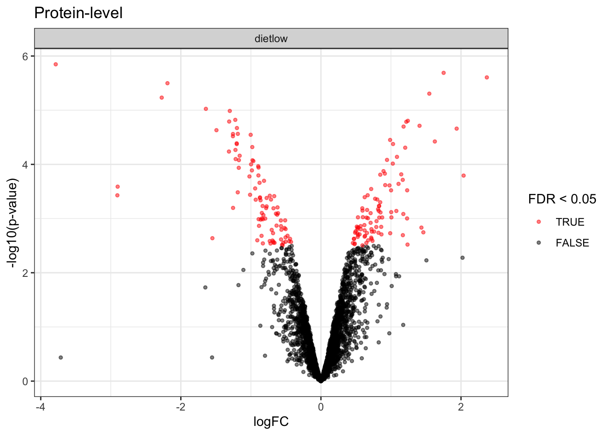
Note that the volcanoplots are still slightly asymmetric, which can probe issues w.r.t. normalisation.
inferences |>
filter(adjPval < alpha) |>
mutate(DA = sign(logFC) |> as.factor() |> recode("-1"= "down","1" = "up")) |>
group_by(contrast, DA) |>
ggplot(aes(x = contrast)) +
geom_bar(aes(fill = factor(DA)),
colour = "black") +
theme_minimal()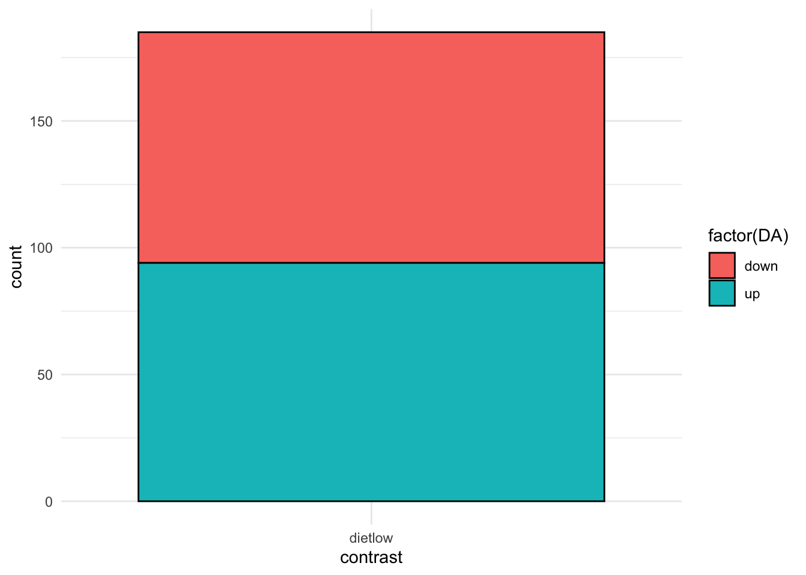
7.3.3 Heatmaps
heatmaps <- lapply(colnames(L),
function(contrast, se, alpha)
{
sig <- rowData(se)[[contrast]] |>
filter(adjPval < alpha) |>
rownames()
quants <- t(scale(t(assay(se[sig,]))))
colnames(quants) <- se$sampleId #specific to this dataset to get short colnames
annotations <- columnAnnotation(
group = se$sampleGroup
) #3.
set.seed(1234) ## annotation colours are randomly generated by default
return(
Heatmap(
quants,
name = "log2 intensity",
top_annotation = annotations,
column_title = paste0(contrast, " = 0")
)
)
},
se = getWithColData(qf, "proteins"),
alpha = alpha)
heatmaps[[1]]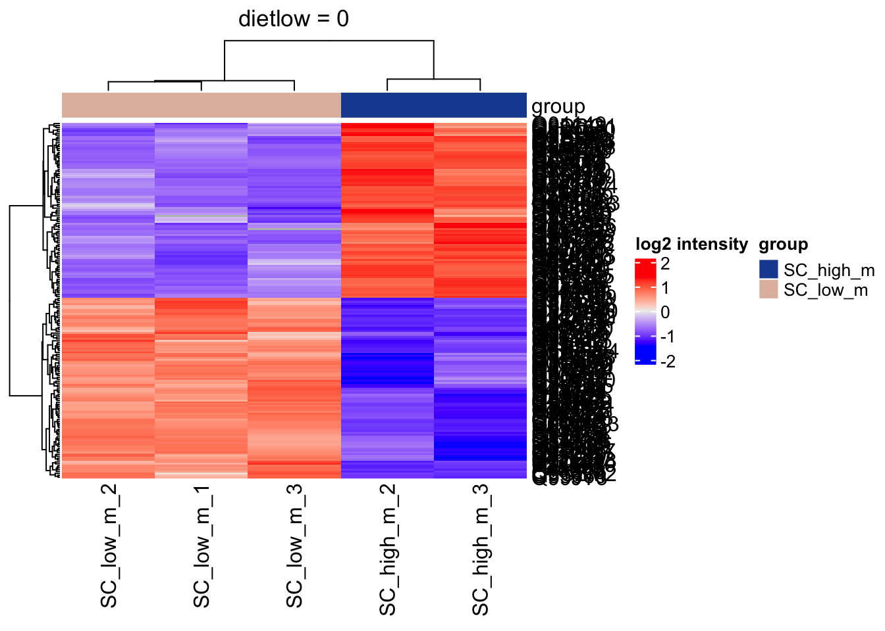
7.3.4 Detail plots
We can explore the data for a protein to validate the statistical inference results. For example, let’s explore the normalised precursor and the summarised protein intensities for the protein with the most significant log2 fold change.
(target_feature <- inferences |>
dplyr::slice(which.min(pval)) |>
pull(feature)
)[1] "Q6P8J7"inferences |>
filter(feature == target_feature) logFC se df t pval adjPval
dietlow.Q6P8J7 -3.786284 0.1655522 5.387791 -22.87064 1.421224e-06 0.002324251
contrast feature
dietlow.Q6P8J7 dietlow Q6P8J7To obtain the required data, we perform a little data manipulation pipeline:
We use the QFeatures subsetting functionality to retrieve all data related to and focusing on the peptides_log and proteins sets that contains the peptide ion data used for model fitting. We then convert the data with longForm() for plotting. Finally, we plot the log2 normalised intensities for each sample at the protein and at the peptide level. Since multiple peptides are recorded for the protein, we link peptides across samples using a grey line. Samples are colored according to E. coli spike-in condition.
qf[target_feature, , c("precursors_log","precursors_norm", "proteins")] |> #1
longForm(colvars = colnames(colData(qf))) |> #2
data.frame() |>
ggplot() +
aes(x = colname,
y = value) +
geom_line(aes(group = rowname), linewidth = 0.1) +
geom_point(aes(colour = sampleGroup)) +
facet_wrap(~ assay, scales = "free") +
ggtitle(target_feature) +
theme_minimal() +
theme(axis.text.x = element_blank())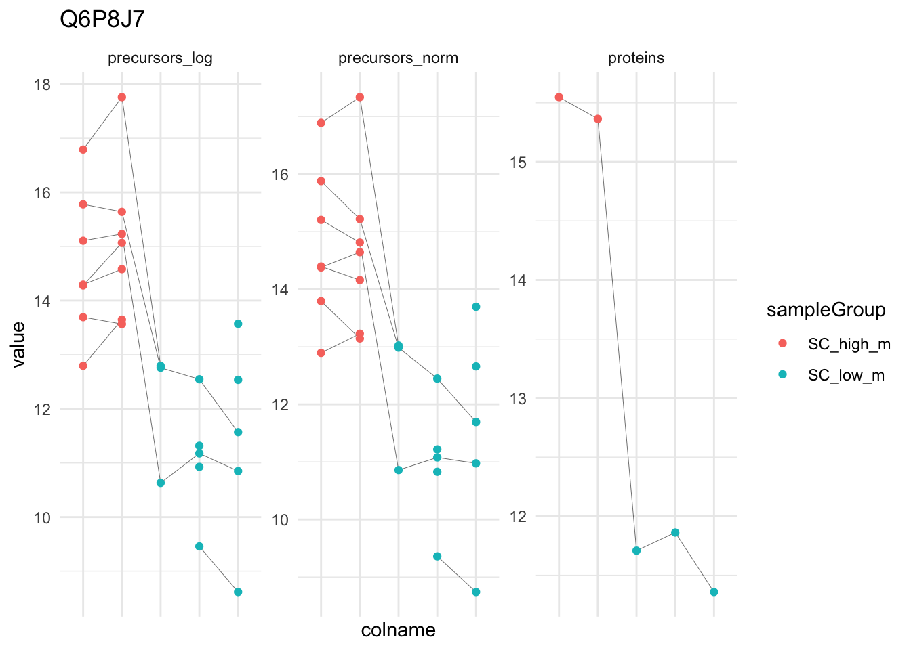
qf[target_feature, , c("precursors_log","precursors_norm", "proteins")] |> #1
longForm(colvars = colnames(colData(qf))) |> #2
data.frame() |>
filter(!is.na(value)) %>%
{
ggplot(.) +
aes(x = sampleGroup,
y = value) +
geom_boxplot(aes(colour = sampleGroup)) +
facet_wrap(~ assay, scales = "free") +
geom_jitter(aes(shape = rowname)) +
scale_shape_manual(values = seq_len(dplyr::n_distinct(.$rowname))) +
ggtitle(target_feature) +
theme_minimal() +
theme(axis.text.x = element_blank()) +
guides(shape = "none")
}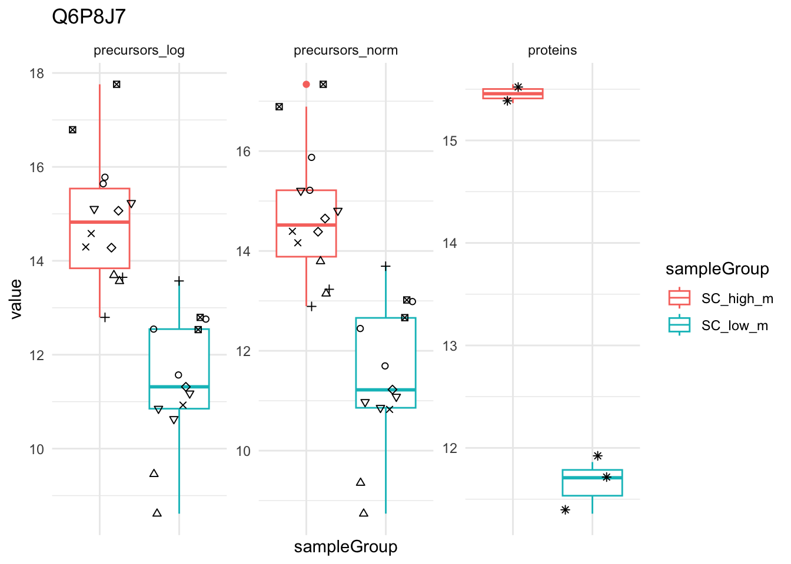
8 Data Modeling at phospho-peptidoform-level (Robust Regression)
8.1 Model estimation
We first define the model. We only have one sources of variability in the experiment that we can model, i.e. the effect of the spike-in condition.
We fit the model to each protein in the
proteinssummarised experiment of the QFeatures objectqfusing the msqrob function.
model <- ~ diet
qf <- msqrob(
qf,
i = "precursorsPTM_norm",
formula = model,
robust = TRUE)We enabled M-estimation (robust = TRUE) for improved robustness against outliers.
8.2 Inference
We can now convert the research question “do the spike-in conditions affect the protein intensities?” into a statistical hypothesis.
In other words, we need to translate this question in a null and alternative hypothesis on a single model parameter or a linear combination of model parameters, which is also referred to with a contrast.
To aid defining contrasts, we will visualise the experimental design using the ExploreModelMatrix package.
vd <- ExploreModelMatrix::VisualizeDesign(
sampleData = colData(qf),
designFormula = model,
textSizeFitted = 4
)
vd$plotlist[[1]]
We have 4 interesting research questions related to the diet.
- Is there an effect of diet on in female mice / prioritise proteins that are differentially abundant (DA) between low and high diet for female mice.
- Is there an effect of diet in male mice / prioritise proteins that are DA between low and high diet for male mice
- Is the effect of diet different in male and female mice / prioritise proteins for which the log2 FC between low and high diet differs between male and female mice (interaction)
- Prioritise proteins that are differentially abundant (DA) between low and high diet in mice. Here we will average the log2 FC over male and female mice. This would prioritise proteins that would be picked up according to diet if we were to remove the interaction term from the model.
Each of these contrasts can be translated in a log2 FC or a difference in log2 FC and can be estimated with one or a linear combination of the model parameters.
- \(\log_2 FC_\text{low - high}^\text{f} = (Intercept) + dietlow- (Intercept) = dietlow\)
- \(\log_2 FC_\text{low - high}^\text{m} = (Intercept) + dietlow + sexm + dietlow:sexm - ((Intercept) + sexm) = dietlow + dietlow:sexm\)
- \(\log_2 FC_\text{low - high}^\text{m} - \log_2 FC_\text{low - high}^\text{f} = dietlow:sexm\)
- $0.5 2 FC^ + 0.5 2 FC^ = dietlow + 0.5 dietlow:sexm $
Below we define the contrast and construct the corresponding contrast matrix.
contrast <- "dietlow=0"
(L <- makeContrast(
contrast,
parameterNames = colnames(vd$designmatrix)
)) dietlow
(Intercept) 0
dietlow 1We assess the contrast for each protein.
qf <- hypothesisTest(qf, i = "precursorsPTM_norm", contrast = L, overwrite = TRUE)We extract the results table from the proteins summarised experiment in the qf object.
inferencesPTM <-
msqrobCollect(qf[["precursorsPTM_norm"]], L)8.3 Report results
We report the results using a results table, volcano plots and heatmaps.
8.3.1 Results table
We use the 5% nominal FDR level to report results
alpha <- 0.05median
for (j in colnames(L)) {
inference <- inferencesPTM |>
dplyr::filter(adjPval < alpha & contrast == j)
cat("**Median - Contrast:**", j, "= 0 (", nrow(inference),
"significant proteins)\n\n")
cat('<div style="max-height:300px; overflow-y:auto;">')
print(
kable(
inference |>
dplyr::arrange(pval) |>
dplyr::relocate(feature),
row.names = FALSE
)
)
cat('</div>')
cat("\n\n\n---\n\n")
}Median - Contrast: dietlow = 0 ( 6 significant proteins)
| feature | logFC | se | df | t | pval | adjPval | contrast |
|---|---|---|---|---|---|---|---|
| _LTVPYVPQVT[Phospho (STY)]DEDRLSR_3 | -6.919153 | 0.3266990 | 6.354242 | -21.17899 | 4.0e-07 | 0.0079757 | dietlow |
| _TS[Phospho (STY)]SLVGPTQSFFMR_2 | 4.578154 | 0.2541990 | 6.354242 | 18.01012 | 1.1e-06 | 0.0079933 | dietlow |
| _[Acetyl (Protein N-term)]MEDVTLHIVERPYSGFPDASS[Phospho (STY)]EGPEPTQGEAR_3 | 6.784009 | 0.3631273 | 6.157556 | 18.68218 | 1.2e-06 | 0.0079933 | dietlow |
| _TSS[Phospho (STY)]LVGPTQSFFMR_2 | 4.488345 | 0.2667709 | 6.354242 | 16.82472 | 1.7e-06 | 0.0084136 | dietlow |
| _THSTSSSIGSGESPFS[Phospho (STY)]R_3 | -8.043137 | 0.4108332 | 5.354242 | -19.57762 | 3.5e-06 | 0.0140636 | dietlow |
| _T[Phospho (STY)]SSLVGPTQSFFMR_2 | 4.268669 | 0.2739053 | 5.833895 | 15.58447 | 5.6e-06 | 0.0191175 | dietlow |
8.3.2 Volcanoplots
volcanoplotPTM <- plot_volcano(inferencesPTM) +
facet_wrap(~contrast) +
labs(title = "Median normalisation")
volcanoplotPTM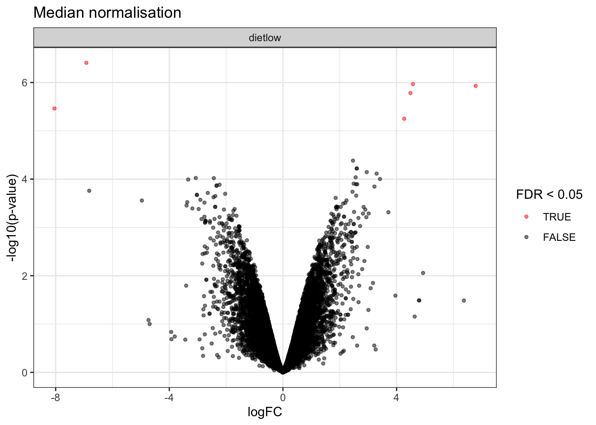
Note that the volcanoplots are still slightly asymmetric, which can probe issues w.r.t. normalisation.
inferencesPTM |>
filter(adjPval < alpha) |>
mutate(DA = sign(logFC) |> as.factor() |> recode("-1"= "down","1" = "up")) |>
group_by(contrast, DA) |>
ggplot(aes(x = contrast)) +
geom_bar(aes(fill = factor(DA)),
colour = "black") +
theme_minimal()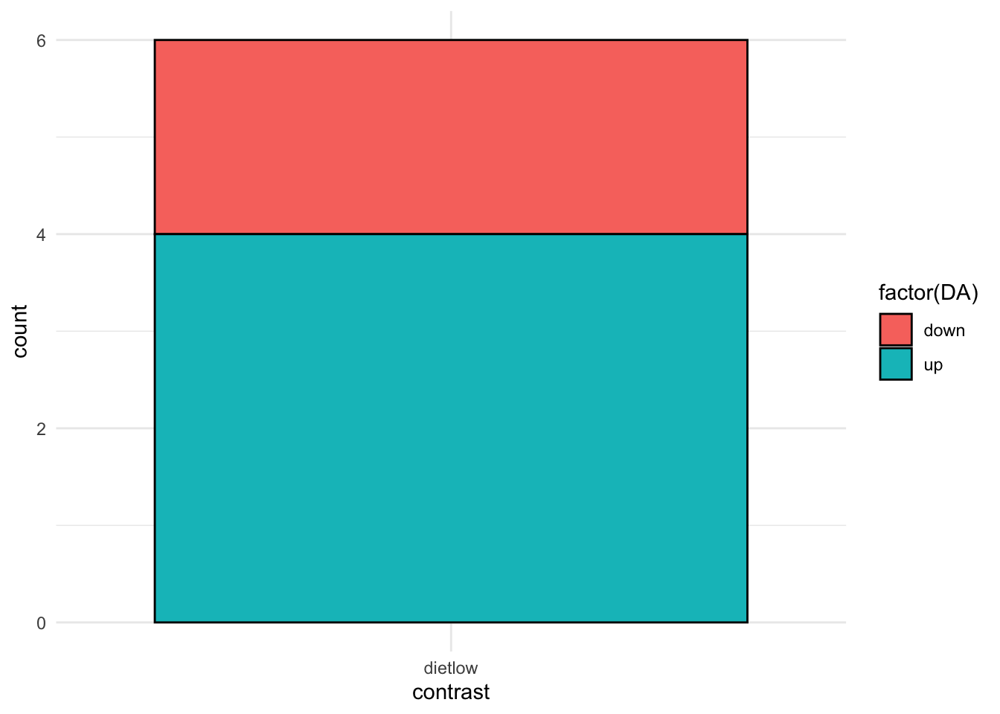
8.3.3 Heatmaps
heatmaps <- lapply(colnames(L),
function(contrast, se, alpha)
{
sig <- rowData(se)[[contrast]] |>
filter(adjPval < alpha) |>
rownames()
quants <- t(scale(t(assay(se[sig,]))))
colnames(quants) <- se$sampleId #specific to this dataset to get short colnames
annotations <- columnAnnotation(
group = se$sampleGroup
) #3.
set.seed(1234) ## annotation colours are randomly generated by default
return(
Heatmap(
quants,
name = "log2 intensity",
top_annotation = annotations,
column_title = paste0(contrast, " = 0")
)
)
},
se = getWithColData(qf, "precursorsPTM_norm"),
alpha = alpha)
heatmaps[[1]]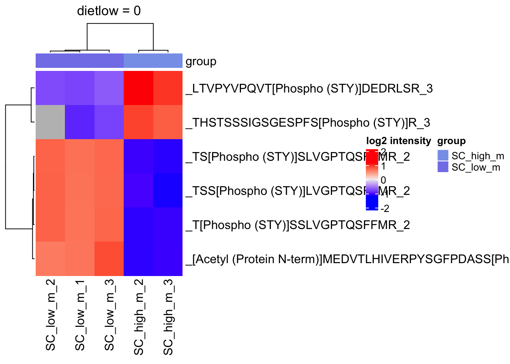
8.3.4 Detail plots
We can explore the data for a protein to validate the statistical inference results. For example, let’s explore the normalised precursor and the summarised protein intensities for the protein with the most significant log2 fold change.
(target_feature <- inferencesPTM |>
dplyr::slice(which.min(pval)) |>
pull(feature)
)[1] "_LTVPYVPQVT[Phospho (STY)]DEDRLSR_3"inferencesPTM |>
filter(feature == target_feature) logFC se df
dietlow._LTVPYVPQVT[Phospho (STY)]DEDRLSR_3 -6.919153 0.326699 6.354242
t pval adjPval
dietlow._LTVPYVPQVT[Phospho (STY)]DEDRLSR_3 -21.17899 3.913896e-07 0.007975737
contrast
dietlow._LTVPYVPQVT[Phospho (STY)]DEDRLSR_3 dietlow
feature
dietlow._LTVPYVPQVT[Phospho (STY)]DEDRLSR_3 _LTVPYVPQVT[Phospho (STY)]DEDRLSR_3To obtain the required data, we perform a little data manipulation pipeline:
We use the QFeatures subsetting functionality to retrieve all data related to and focusing on the peptides_log and proteins sets that contains the peptide ion data used for model fitting. We then convert the data with longForm() for plotting. Finally, we plot the log2 normalised intensities for each sample at the protein and at the peptide level. Since multiple peptides are recorded for the protein, we link peptides across samples using a grey line. Samples are colored according to E. coli spike-in condition.
qf[target_feature, , c("precursorsPTM_log","precursorsPTM_norm")] |> #1
longForm(colvars = colnames(colData(qf))) |> #2
data.frame() |>
ggplot() +
aes(x = colname,
y = value) +
geom_line(aes(group = rowname), linewidth = 0.1) +
geom_point(aes(colour = sampleGroup)) +
facet_wrap(~ assay, scales = "free") +
ggtitle(target_feature) +
theme_minimal() +
theme(axis.text.x = element_blank())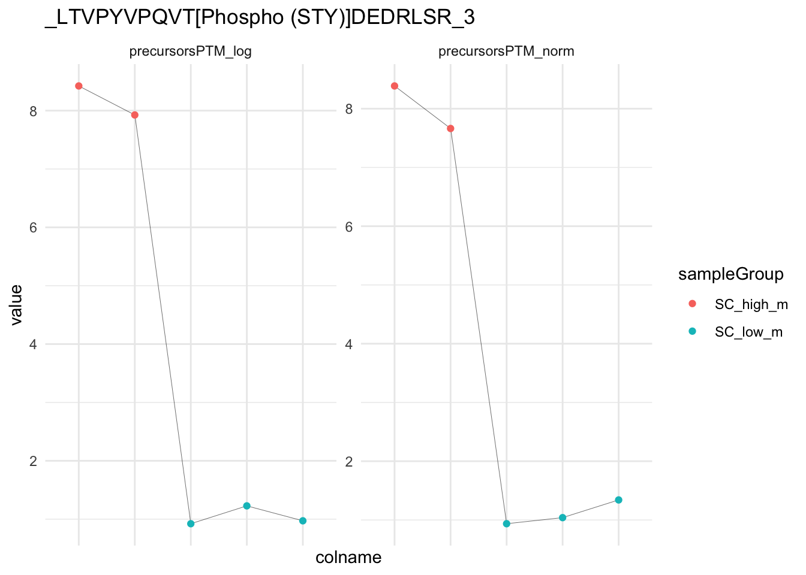
qf[target_feature, , c("precursorsPTM_log","precursorsPTM_norm")] |> #1
longForm(colvars = colnames(colData(qf))) |> #2
data.frame() |>
filter(!is.na(value)) %>%
{
ggplot(.) +
aes(x = sampleGroup,
y = value) +
geom_boxplot(aes(colour = sampleGroup)) +
facet_wrap(~ assay, scales = "free") +
geom_jitter(aes(shape = rowname)) +
scale_shape_manual(values = seq_len(dplyr::n_distinct(.$rowname))) +
ggtitle(target_feature) +
theme_minimal() +
theme(axis.text.x = element_blank()) +
guides(shape = "none")
}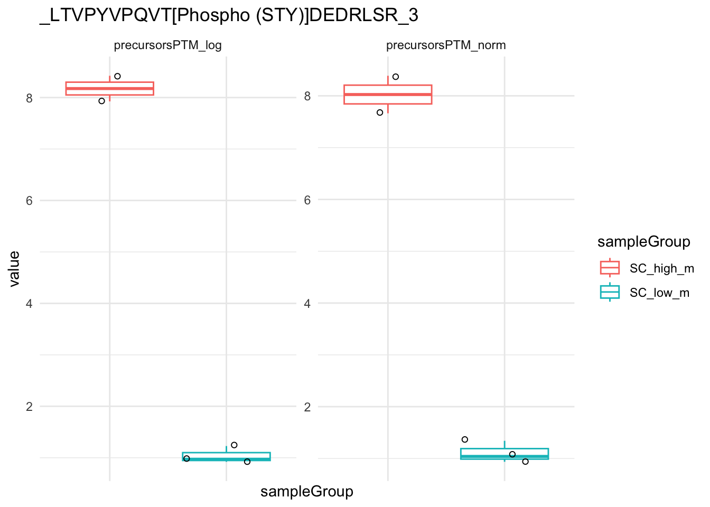
9 Usage (Robust Regression)
calculate_usage_paired <- function(qf, i_precursor, i_protein = "proteins", fcol_precursor = "Protein.Group", fcol_protein = "Protein.Group", name = "precursors_usage", match_cols_precursor_to_protein = colnames(qf[[i_precursor]]))
{
nf <- assay(qf[[i_precursor]])
nf[,] <- NA
match_precursor_to_protein_FC <- match(
rowData(qf[[i_precursor]])[[fcol_precursor]],
rowData(qf[[i_protein]])[[fcol_protein]])
idsMatch <- which(!is.na(match_precursor_to_protein_FC))
nf[idsMatch, ] <- assay(qf[[i_protein]])[match_precursor_to_protein_FC[idsMatch], match_cols_precursor_to_protein]
qf <- sweep( #4. Subtract log2 norm factor elementwise (MARGIN = 1:2)
qf,
MARGIN = 1:2,
STATS = nf,
i = i_precursor,
name = name
)
match_name <- paste0("match_",i_precursor,"_to_",i_protein)
rowData(qf[[name]])[[match_name]] <- match_precursor_to_protein_FC
qf <- filterFeatures(qf, i = name, filter = formula(paste0("~ !is.na(",match_name,")")))
}qf <- calculate_usage_paired(qf, i_precursor = "precursorsPTM_norm", i_protein = "proteins", fcol_precursor = "PG_ProteinGroups", fcol_protein = "PG_ProteinGroups", name = "usage", match_cols_precursor_to_protein = 1:ncol(qf[["precursorsPTM_norm"]]))qf[, , "usage"] |> #1.
longForm(colvars = colnames(colData(qf))) |> #2.
data.frame() |>
filter(!is.na(value)) |>
ggplot() + #3.
aes(x = value,
colour = sampleGroup,
group = colname) +
geom_density() +
labs(subtitle = "usage") +
theme_minimal()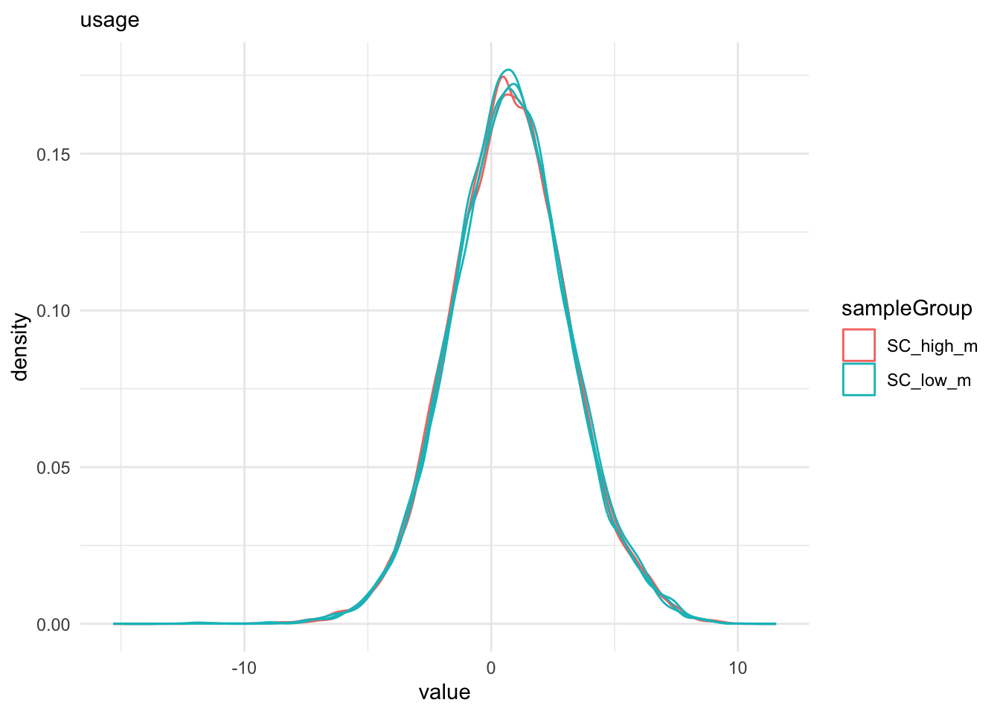
9.1 Model estimation
We first define the model. We only have one sources of variability in the experiment that we can model, i.e. the effect of the spike-in condition.
We fit the model to each protein in the
proteinssummarised experiment of the QFeatures objectqfusing the msqrob function.
model <- ~ diet
qf <- msqrob(
qf,
i = "usage",
formula = model,
robust = TRUE,
overwrite = TRUE)We enabled M-estimation (robust = TRUE) for improved robustness against outliers.
9.2 Inference
We can now convert the research question “do the spike-in conditions affect the protein intensities?” into a statistical hypothesis.
In other words, we need to translate this question in a null and alternative hypothesis on a single model parameter or a linear combination of model parameters, which is also referred to with a contrast.
To aid defining contrasts, we will visualise the experimental design using the ExploreModelMatrix package.
vd <- ExploreModelMatrix::VisualizeDesign(
sampleData = colData(qf),
designFormula = model,
textSizeFitted = 4
)
vd$plotlist[[1]]
We have 4 interesting research questions related to the diet.
- Is there an effect of diet on in female mice / prioritise proteins that are differentially abundant (DA) between low and high diet for female mice.
- Is there an effect of diet in male mice / prioritise proteins that are DA between low and high diet for male mice
- Is the effect of diet different in male and female mice / prioritise proteins for which the log2 FC between low and high diet differs between male and female mice (interaction)
- Prioritise proteins that are differentially abundant (DA) between low and high diet in mice. Here we will average the log2 FC over male and female mice. This would prioritise proteins that would be picked up according to diet if we were to remove the interaction term from the model.
Each of these contrasts can be translated in a log2 FC or a difference in log2 FC and can be estimated with one or a linear combination of the model parameters.
- \(\log_2 FC_\text{low - high}^\text{f} = (Intercept) + dietlow- (Intercept) = dietlow\)
- \(\log_2 FC_\text{low - high}^\text{m} = (Intercept) + dietlow + sexm + dietlow:sexm - ((Intercept) + sexm) = dietlow + dietlow:sexm\)
- \(\log_2 FC_\text{low - high}^\text{m} - \log_2 FC_\text{low - high}^\text{f} = dietlow:sexm\)
- $0.5 2 FC^ + 0.5 2 FC^ = dietlow + 0.5 dietlow:sexm $
Below we define the contrast and construct the corresponding contrast matrix.
contrast <- "dietlow=0"
(L <- makeContrast(
contrast,
parameterNames = colnames(vd$designmatrix)
)) dietlow
(Intercept) 0
dietlow 1We assess the contrast for each protein.
qf <- hypothesisTest(qf, i = "usage", contrast = L, overwrite = TRUE)We extract the results table from the proteins summarised experiment in the qf object.
inferencesUsage <-
msqrobCollect(qf[["usage"]], L)9.3 Report results
We report the results using a results table, volcano plots and heatmaps.
9.3.1 Results table
We use the 5% nominal FDR level to report results
alpha <- 0.05for (j in colnames(L)) {
inference <- inferencesUsage |>
dplyr::filter(adjPval < alpha & contrast == j)
cat("**Median - Contrast:**", j, "= 0 (", nrow(inference),
"significant proteins)\n\n")
cat('<div style="max-height:300px; overflow-y:auto;">')
print(
kable(
inference |>
dplyr::arrange(pval) |>
dplyr::relocate(feature),
row.names = FALSE
)
)
cat('</div>')
cat("\n\n\n---\n\n")
}Median - Contrast: dietlow = 0 ( 3 significant proteins)
| feature | logFC | se | df | t | pval | adjPval | contrast |
|---|---|---|---|---|---|---|---|
| _LTVPYVPQVT[Phospho (STY)]DEDRLSR_3 | -7.037207 | 0.3079907 | 6.512652 | -22.84877 | 2.0e-07 | 0.0025497 | dietlow |
| _[Acetyl (Protein N-term)]MEDVTLHIVERPYSGFPDASS[Phospho (STY)]EGPEPTQGEAR_3 | 6.800870 | 0.4055403 | 6.413151 | 16.76990 | 1.5e-06 | 0.0107430 | dietlow |
| _THSTSSSIGSGESPFS[Phospho (STY)]R_3 | -8.011333 | 0.4743543 | 5.512652 | -16.88892 | 5.9e-06 | 0.0271780 | dietlow |
9.3.2 Volcanoplots
volcanoplot <- plot_volcano(inferencesUsage) +
facet_wrap(~contrast) +
labs(title = "Usage")
volcanoplot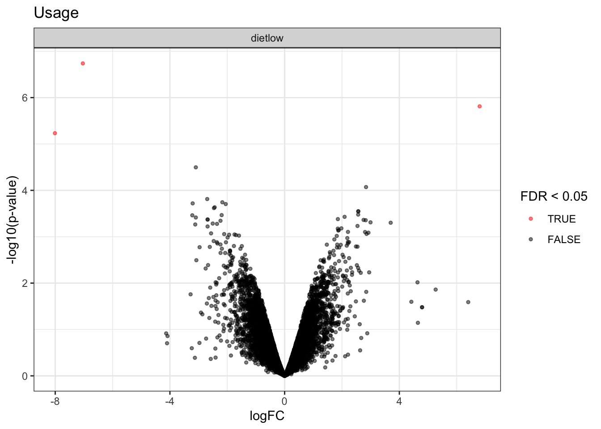
inferencesUsage |>
filter(adjPval < alpha) |>
mutate(DA = sign(logFC) |> as.factor() |> recode("-1"= "down","1" = "up")) |>
group_by(contrast, DA) |>
ggplot(aes(x = contrast)) +
geom_bar(aes(fill = factor(DA)),
colour = "black") +
theme_minimal()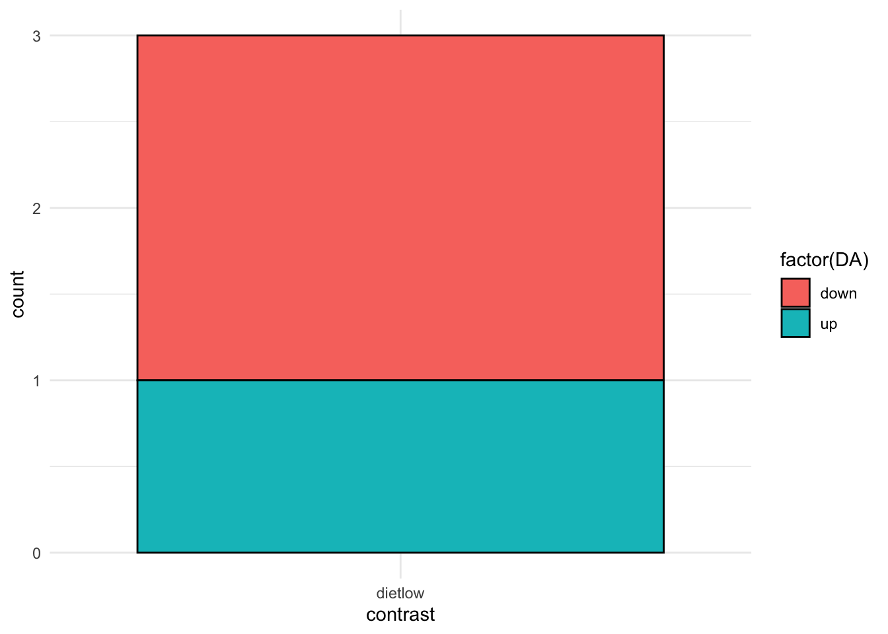
9.3.3 Detail plots
We can explore the data for a protein to validate the statistical inference results. For example, let’s explore the normalised precursor and the summarised protein intensities for the protein with the most significant log2 fold change.
(target_feature <- inferencesUsage |>
dplyr::slice(which.min(pval)) |>
pull(feature)
)[1] "_LTVPYVPQVT[Phospho (STY)]DEDRLSR_3"inferencesUsage |>
filter(feature == target_feature) logFC se df
dietlow._LTVPYVPQVT[Phospho (STY)]DEDRLSR_3 -7.037207 0.3079907 6.512653
t pval adjPval
dietlow._LTVPYVPQVT[Phospho (STY)]DEDRLSR_3 -22.84877 1.832478e-07 0.002549709
contrast
dietlow._LTVPYVPQVT[Phospho (STY)]DEDRLSR_3 dietlow
feature
dietlow._LTVPYVPQVT[Phospho (STY)]DEDRLSR_3 _LTVPYVPQVT[Phospho (STY)]DEDRLSR_3To obtain the required data, we perform a little data manipulation pipeline:
We use the QFeatures subsetting functionality to retrieve all data related to and focusing on the peptides_log and proteins sets that contains the peptide ion data used for model fitting. We then convert the data with longForm() for plotting. Finally, we plot the log2 normalised intensities for each sample at the protein and at the peptide level. Since multiple peptides are recorded for the protein, we link peptides across samples using a grey line. Samples are colored according to E. coli spike-in condition.
ptm <- qf[target_feature, , c("precursorsPTM_norm", "usage")] |> #1
longForm(colvars = colnames(colData(qf)), rowvars = "PG_ProteinGroups") |> #2
data.frame()
protein <- qf[unique(ptm$PG_ProteinGroups), , c("proteins")] |> #1
longForm(colvars = colnames(colData(qf)), rowvars = "PG_ProteinGroups") |> #2
data.frame()
rbind(ptm, protein) |>
ggplot() +
aes(x = colname,
y = value) +
geom_line(aes(group = rowname), linewidth = 0.1) +
geom_point(aes(colour = sampleGroup)) +
facet_wrap(~ assay, scales = "free") +
ggtitle(target_feature) +
theme_minimal() +
theme(axis.text.x = element_blank())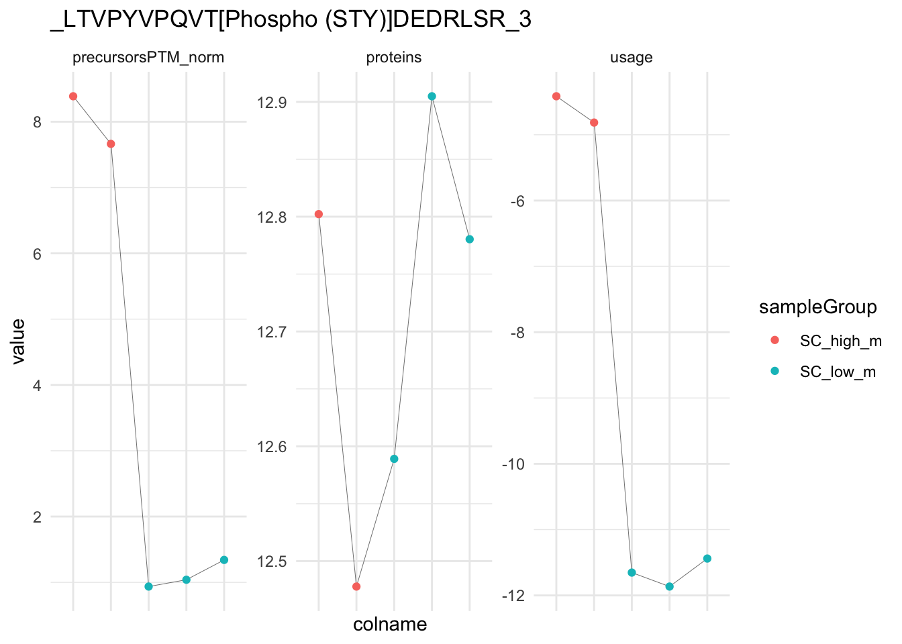
rbind(ptm, protein) %>%
{
ggplot(.) +
aes(x = sampleGroup,
y = value) +
geom_boxplot(aes(colour = sampleGroup)) +
facet_wrap(~ assay, scales = "free") +
geom_jitter(aes(shape = rowname)) +
scale_shape_manual(values = seq_len(dplyr::n_distinct(.$rowname))) +
ggtitle(target_feature) +
theme_minimal() +
theme(axis.text.x = element_blank()) +
guides(shape = "none")
}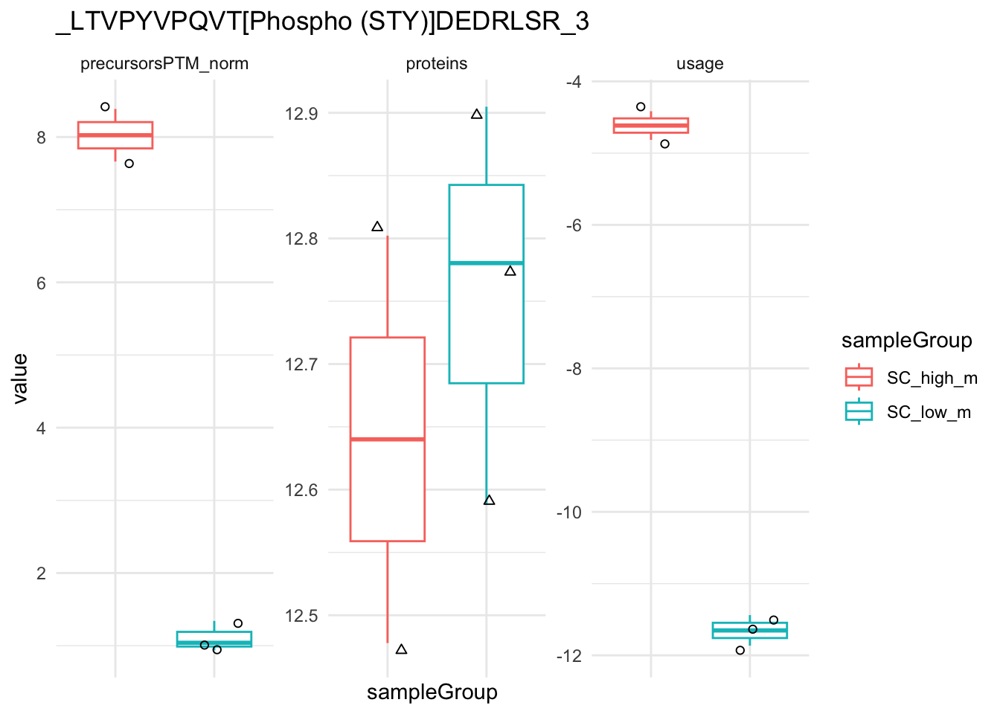
References
Aldehoff, Alix Sarah, Isabel Karkossa, Hannes Broghammer, Sandra Krupka, Jan Weiner, Charlotte Goerdeler, Rasha Nuwayhid, et al. 2025. “Advanced Proteomics Approaches Hold Potential for the Risk Assessment of Metabolism-Disrupting Chemicals as Omics-Based NAM: A Case Study Using the Phthalate Substitute DINCH.” Environmental Science & Technology 59 (31): 16193–216. https://doi.org/10.1021/acs.est.5c01206.